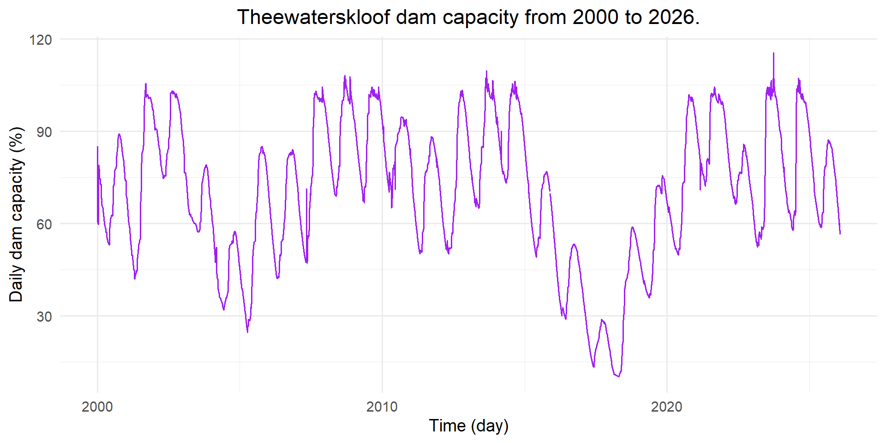
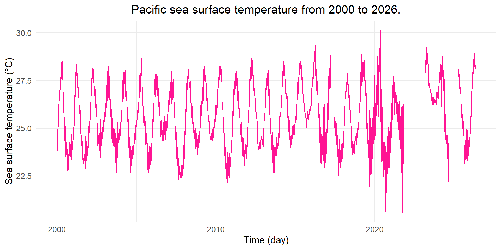
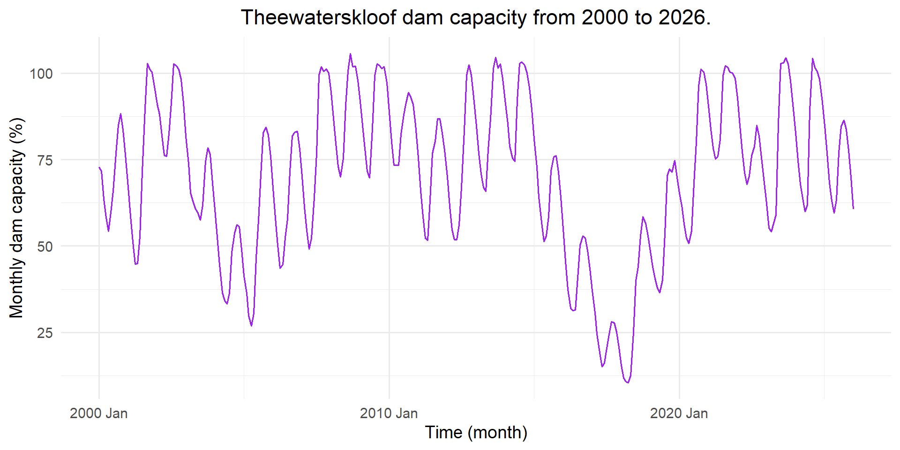
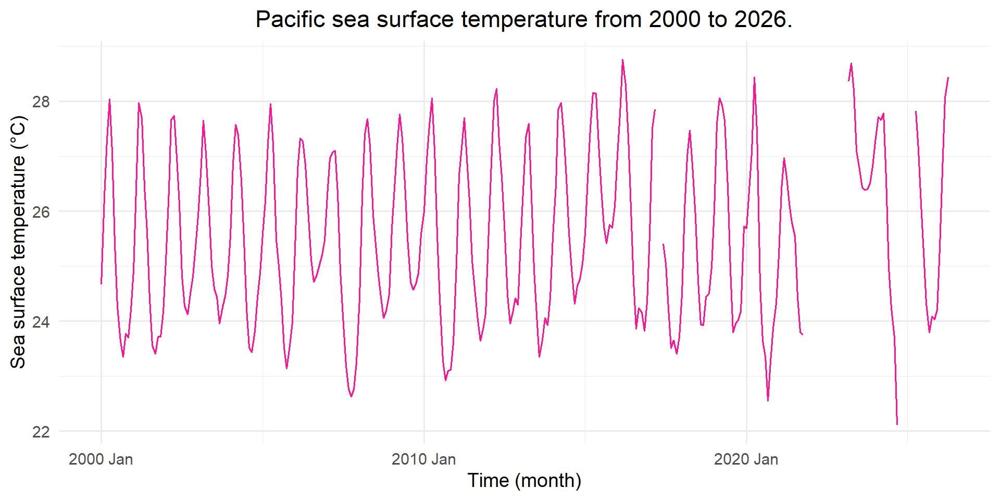
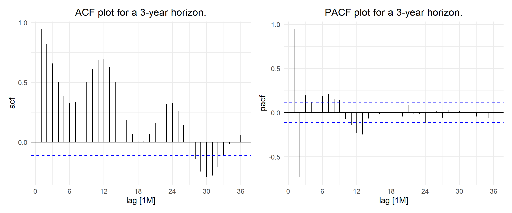
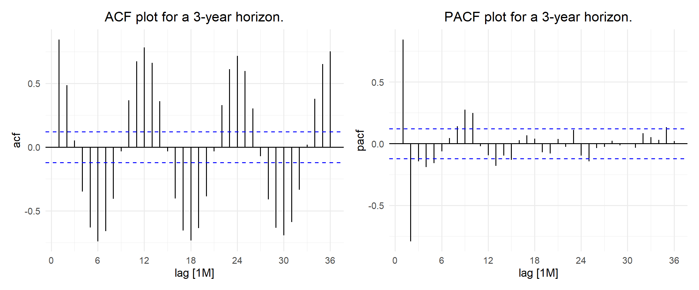
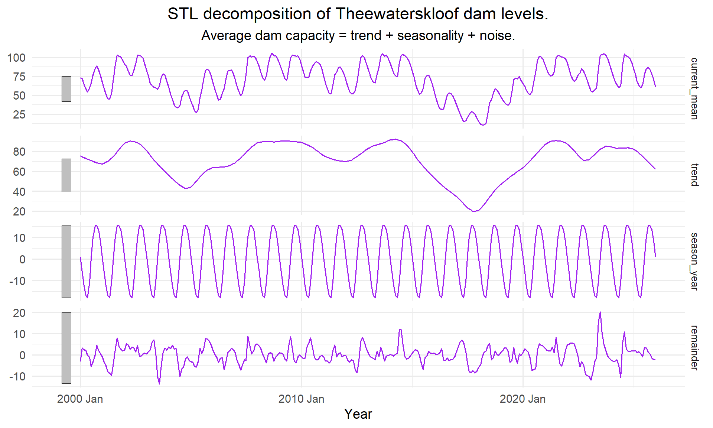
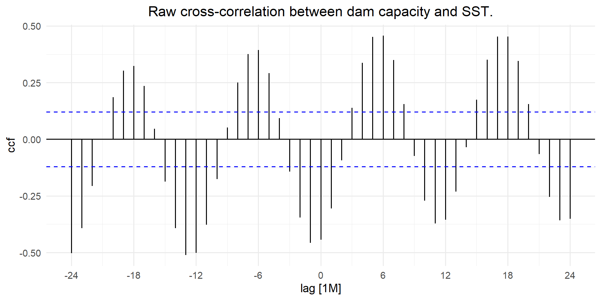
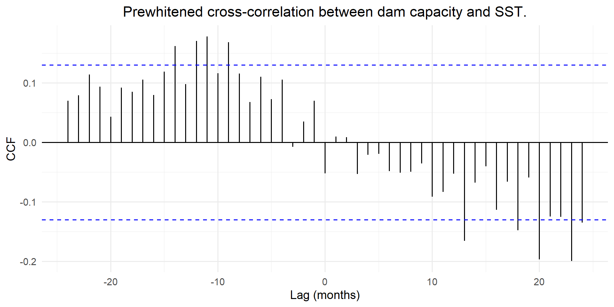
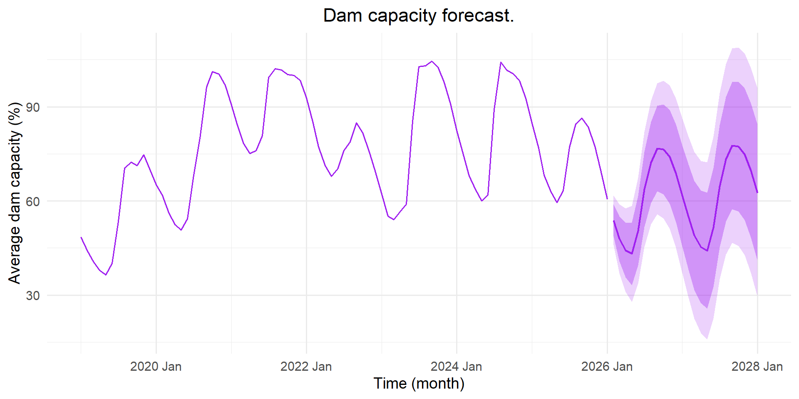

# Load required libraries:library(tidyverse)library(lubridate)library(tsibble)library(feasts)library(fable)library(imputeTS)library(patchwork)library(ggtime)# Project plotting theme and colours:theme_set(theme_minimal(base_size =14) +theme(plot.title =element_text(hjust =0.5),plot.subtitle =element_text(hjust =0.5)))col_main ="purple"# dam capacitycol_accent ="deeppink"# sea surface temperature# Function to format numbers in text:fmt =function(x, d =3) formatC(x, format ="f", digits = d)
Introduction
The El Niño phase of the El Niño Southern Oscillation (ENSO) is characterised by anomalous warming of sea surface temperatures in the eastern and central Pacific Ocean. This phenomenon typically starts between March and June and peaks around the following December/January (Mason, 2001). An El Niño event typically causes warm and dry conditions over Southern Africa, with effects emerging within the year following the El Niño onset in the Pacific (Thomson et al., 2003). Over the 2015–2016 season, Southern Africa experienced a severe drought with the 2015/2016 El Niño being identified as a contributing factor. Dam levels dropped and severe water restrictions were implemented.
The South African Weather Service (SAWS) is warning of a super El Niño event in 2026–2027, as current sea surface temperatures rise beyond the threshold used to define a very strong El Niño (Mail & Guardian, 2026). This project focuses on Theewaterskloof Dam, the single largest reservoir in the Western Cape Water Supply System.
The aim of this project is to use seasonal ARIMA models to forecast Theewaterskloof Dam levels and eastern Pacific sea surface temperature (SST) along 95°W individually, and to test whether SST, used as a lagged predictor in a dynamic regression, improves dam-level forecasts. This tests the hypothesis that eastern Pacific SST is a leading indicator of drought risk in the Western Cape. Methods follow Hyndman and Athanasopoulos (2021) and the course notes (Department of Statistical Sciences, 2026), using the fable and feasts packages (O’Hara-Wild et al., 2024a, 2024b).
Data
Two publicly available datasets are used. Neither contains personal information, so no POPIA considerations apply.
Theewaterskloof Dam levels: the Dam levels from 2000 dataset from the City of Cape Town Open Data Portal (City of Cape Town, 2026). The variable used is THEEWATERSKLOOF_Current, the daily dam level as a percentage of full capacity, from January 2000 to January 2026.
Sea surface temperature: daily SST (°C) from the seven TAO/TRITON moored buoys along 95°W (8°N, 5°N, 2°N, 0°, 2°S, 5°S and 8°S), downloaded from the Global Tropical Moored Buoy Array data delivery page (NOAA Pacific Marine Environmental Laboratory, 2026). Days on which a buoy did not record are coded as -9.99.
Data access instructions. Both datasets are updated continuously, so the snapshots used here (accessed 30 September 2026) are saved in the _data/ folder next to this file and are included in the submitted portfolio. To download them again:
Go to https://odp-cctegis.opendata.arcgis.com/, search for “Dam levels”, open Dam levels from 2000, choose Download → CSV and save the file as _data/Dam_Levels_from_2000.csv.
Go to https://www.pmel.noaa.gov/tao/drupal/disdel/, select Sea Surface Temperature, daily resolution and ASCII format, and select the seven sites on 95°W listed above. Unzip the download into _data/; the files are named sst8n95w_dy.ascii, …, sst8s95w_dy.ascii.
# Store sea surface temperature files:sst_files =c("_data/sst0n95w_dy.ascii","_data/sst2n95w_dy.ascii","_data/sst5n95w_dy.ascii","_data/sst8n95w_dy.ascii","_data/sst2s95w_dy.ascii","_data/sst5s95w_dy.ascii","_data/sst8s95w_dy.ascii")# Function to read one buoy file:sst_files_fxn =function(path){# Read raw lines: raw_lines =readLines(path)# Extract only lines starting with a date: data_lines = raw_lines[grepl("^[0-9]{8}\\s", str_trim(raw_lines))]# Read into dataframe:read.table(text = data_lines,header =FALSE,col.names =c("YYYYMMDD", "HHMM", "SST", "Q", "S") ) |>filter(SST !=-9.99) |>mutate(Date =as.Date(as.character(YYYYMMDD), format ="%Y%m%d")) |>as_tsibble(index = Date) |>fill_gaps() |>as_tibble()}buoy_daily = sst_files |>map_dfr(sst_files_fxn, .id ="station_id") |>mutate(month =month(Date))# Monthly climatology of each buoy and average across buoys:buoy_clim = buoy_daily |>filter(!is.na(SST)) |>group_by(station_id, month) |>summarise(clim =mean(SST), .groups ="drop")grand_clim = buoy_clim |>group_by(month) |>summarise(grand_clim =mean(clim), .groups ="drop")# Note: a plain mean jumps when a warm or cool buoy drops out# Composition-adjusted daily mean (mean anomaly of reporting buoys + all-buoy climatology):all_ts = buoy_daily |>left_join(buoy_clim, by =c("station_id", "month")) |>left_join(grand_clim, by ="month") |>mutate(anom = SST - clim) |>group_by(Date) |>summarise(raw_SST =if (all(is.na(SST))) NA_real_elsemean(SST, na.rm =TRUE),mean_SST =if (all(is.na(anom))) NA_real_elsemean(anom, na.rm =TRUE) +first(grand_clim),active_obs =sum(!is.na(SST)),.groups ="drop" ) |>as_tsibble(index = Date) |>fill_gaps()# Determine how many missing values exist and the length of each gap:r =rle(is.na(all_ts$mean_SST))threshold_days =14# no. days we can smooth overimputed_full =na_kalman(all_ts$mean_SST) # smooth over every gapcut_ts = all_ts |>mutate(is_missing =is.na(mean_SST),run_len =rep(r$lengths, r$lengths),# If day is missing and gap is <= 14 days, smooth, else leave as NA:mean_SST =if_else(is_missing & run_len <= threshold_days, imputed_full, mean_SST) ) |>select(-is_missing, -run_len) |>filter(Date >=as.Date("2000-01-01"))# Effect of composition adjustment:obs_days = all_ts |>as_tibble() |>filter(!is.na(raw_SST))pct_all_seven =mean(obs_days$active_obs ==7) *100max_adj_diff =max(abs(obs_days$mean_SST - obs_days$raw_SST))
Show code
# Aggregate both series to monthly means:monthly_damlvl_ts = damlvl_ts |>index_by(year_month =~yearmonth(.)) |>summarise(current_mean =mean(THEEWATERSKLOOF_Current, na.rm =TRUE))monthly_ts = cut_ts |>index_by(year_month =~yearmonth(.)) |>summarise(current_mean =mean(mean_SST, na.rm =TRUE)) |>mutate(current_mean =if_else(is.nan(current_mean), NA_real_, current_mean))# SST before long gaps:monthly_ts_pre2021 = monthly_ts |>filter(year_month <=yearmonth("2021 Oct")) |>mutate(current_mean =na_interpolation(current_mean))
The duplicate observation in the dam level series was removed by keeping only the first occurrence of each date. The series contains 1 missing observation, left as NA.
For the SST dataset, the seven buoys were combined into a single daily value. Not every buoy recorded every day. Since the buoys sit at different latitudes, some are consistently warmer than others. Taking a simple average of the buoys that reported would therefore make the daily SST jump up or down whenever a warmer or cooler buoy didn’t record, even if the ocean temperature had not changed. Instead of averaging the raw temperatures, I averaged how far each reporting buoy was from its long-run average for that month (across 2000--2026). I added the long-run average for that month back to each reading to ensure that the series units remained in \(^{\circ}\text{C}\). This ensures that the daily average no longer jumps when observations are missing from a warmer or cooler buoy.
Let \(x_{b,t}\) be the SST recorded by buoy \(b\) on day \(t\), let \(m(t)\) be the calendar month of day \(t\), and let \(\bar{x}_{b,m}\) be the long-run average SST of buoy \(b\) in calendar month \(m\). If \(A_t\) is the set of buoys that reported on day \(t\) and \(n_t = |A_t|\), the daily SST is
The first term in Equation 1 is the average difference between each reporting buoy and its usual temperature for that month. The second term is the usual temperature for that month across all seven buoys, kepping the units as \(^{\circ}\text{C}\). A missing buoy therefore no longer shifts the average. Without this correction, the daily average would have been out by as much as 3.35\(^{\circ}\text{C}\) on some days. Gaps of up to 14 days were filled with Kalman smoothing (Moritz & Bartz-Beielstein, 2017), while longer gaps were left.
The SST series has two long periods of missing observations, November 2021 to March 2023 and October 2024 to March 2025, when the entire buoy array was not recording. These gaps are too long to be filled reliably, so the SST models were fitted using only January 2000 to October 2021. Within this period, the remaining missing months (March and April 2017) were linearly interpolated. Finally, both series were aggregated to monthly means,
where \(D_j\) is the set of days in month \(j\) with an observation and \(z_t\) is the daily dam level or SST. This shows the seasonal pattern more clearly and smooths out daily noise.
Exploratory data analysis
Show code
ggplot(data = damlvl_ts,mapping =aes(x = DATE,y = THEEWATERSKLOOF_Current)) +geom_line(col = col_main) +labs(title ="Theewaterskloof dam capacity from 2000 to 2026.",x ="Time (day)",y ="Daily dam capacity (%)")

Figure 1: Theewaterskloof dam capacity from January 2000 to January 2026.
Show code
ggplot(data = cut_ts,mapping =aes(x = Date,y = mean_SST)) +geom_line(col = col_accent) +labs(title ="Pacific sea surface temperature from 2000 to 2026.",x ="Time (day)",y ="Sea surface temperature (°C)")

Figure 2: Average eastern Pacific sea surface temperature along 95°W (composition-adjusted) from January 2000 to April 2026.
Both Figure 1 and Figure 2 show that these series are noisy. The dam level series has multi-year drops and slow recoveries, whereas the SST series oscillates more evenly around its mean.
Show code
ggplot(data = monthly_damlvl_ts,mapping =aes(x = year_month,y = current_mean)) +geom_line(col = col_main) +labs(title ="Theewaterskloof dam capacity from 2000 to 2026.",x ="Time (month)",y ="Monthly dam capacity (%)")

Figure 3: Monthly Theewaterskloof dam capacity from January 2000 to January 2026.
Show code
ggplot(data = monthly_ts,mapping =aes(x = year_month,y = current_mean)) +geom_line(col = col_accent) +labs(title ="Pacific sea surface temperature from 2000 to 2026.",x ="Time (month)",y ="Sea surface temperature (°C)")

Figure 4: Monthly average eastern Pacific sea surface temperature from January 2000 to April 2026.
As seen in Figure 3 and Figure 4, both series display strong 12-month seasonal patterns. The dam level series also has an irregular multi-year drought/recovery cycle.
Southern Africa experienced a severe drought between 2015 and 2018. Figure 5 compares dam capacity over this period with SST from approximately 3 months earlier.
Figure 5: Theewaterskloof dam capacity from 2015 to 2019 with sea surface temperature from 3 months earlier.
In Figure 5, dam capacity declines to a minimum around 2018 and then recovers through 2019. SST shows a slightly elevated double peak in both 2015 and 2016, consistent with the El Niño of that period. Both series keep their strong seasonal patterns. This makes any lagged relationship difficult to see.
Figure 6: Deseasonalised dam capacity from 2015 to 2019 with sea surface temperature from 3 months earlier.
Figure 6 shows the same period as Figure 5 with the seasonality removed. Without the seasonal pattern, dam capacity decreases smoothly to a minimum around 2018 and then recovers steadily through 2019. In 2015 and 2016, the rise in deseasonalised SST comes before the drop in dam capacity, which supports the hypothesis that warmer Pacific SST leads to lower dam levels. However, SST is also rising during the 2018 to 2019 recovery, when dam levels are increasing. This suggests that the relationship between dam capacity and SST is not consistent across the whole period, and that other factors, such as winter rainfall in the Western Cape and the water restrictions introduced during the drought, are likely to be driving the recovery.
Figure 7: Monthly subseries of Theewaterskloof dam capacity (left) and average Pacific sea surface temperature (right) from 2000 to 2026. The blue line in each panel indicates the mean for that month.
Figure 7 illustrates the strong seasonal pattern identified in Figure 3 and Figure 4. Dam levels are lowest around May and peak in September. The variation in dam levels within each month is approximately the same across all months. SST peaks in April and is lowest in September. Unlike the dam levels, SST shows greater variability in the cooler months than in the warmer months. Dam capacity (%) and SST (°C) are measured on different scales, so the overall variability of the two series cannot be compared directly. The peak in SST comes roughly five to six months before the peak in dam levels. This timing reflects two separate annual cycles, the seasonal warming of the eastern Pacific and the Western Cape winter rainfall, rather than an El Niño effect. When SST is shifted forward by about six months, the two seasonal peaks line up, which produces a positive correlation even though the hypothesis predicts that unusually warm SST should lead to lower dam levels. This is important when interpreting the cross-correlation in Figure 13. The structural gaps in the SST series also mean that some months have more observations than others.
Show code
acf_damlvl_plot = monthly_damlvl_ts |>ACF(current_mean, lag_max =36) |> ggtime::autoplot() +labs(title ="ACF plot for a 3-year horizon.")pacf_damlvl_plot = monthly_damlvl_ts |>PACF(current_mean, lag_max =36) |> ggtime::autoplot() +labs(title ="PACF plot for a 3-year horizon.")acf_damlvl_plot + pacf_damlvl_plot

Figure 8: ACF and PACF plots for Theewaterskloof dam capacity.
Show code
acf_plot = monthly_ts_pre2021 |>ACF(current_mean, lag_max =36) |> ggtime::autoplot() +labs(title ="ACF plot for a 3-year horizon.")pacf_plot = monthly_ts_pre2021 |>PACF(current_mean, lag_max =36) |> ggtime::autoplot() +labs(title ="PACF plot for a 3-year horizon.")acf_plot + pacf_plot

Figure 9: ACF and PACF plots for eastern Pacific sea surface temperature (January 2000 to October 2021).
Figure 8 and Figure 9 both indicate non-stationarity. The SST ACF has a regular seasonal pattern with sharp peaks at 12-month intervals. The dam level ACF decays slowly and its seasonal peaks are less regular, suggesting that dam levels are driven by a long-term irregular hydrological cycle as well as the seasonal rainfall pattern. Both PACF plots have a large spike at lag 1, typical of a highly persistent series, followed by a negative spike at lag 2. The AR and MA orders are chosen below from the ACF and PACF of the seasonally differenced series.
Show code
stl_damlvl_fit |>components() |> ggtime::autoplot(colour = col_main) +labs(title ="STL decomposition of Theewaterskloof dam levels.",subtitle ="Average dam capacity = trend + seasonality + noise.",x ="Year") +theme(strip.text.y =element_text(size =10))

Figure 10: STL decomposition of the Theewaterskloof dam capacity series from 2000 to 2026.
Figure 11: STL decomposition of the eastern Pacific sea surface temperature series from 2000 to 2026. Values in the two long gaps are interpolated, not observed.
Figure 11 shows the decomposition of the sea surface temperature series. There are missing observations from November 2021 to March 2023 and from October 2024 to March 2025. These values have been interpolated so that the decomposition could be computed and should not be interpreted as true measurements.
As seen in Figure 10 and Figure 11, both series have strong seasonal components. The dam capacity trend shows multi-year drought and recovery cycles, with noticeable dips in 2005 and in 2018. The SST trend is not flat and varies between approximately 24.5°C and 27.5°C, which is similar in size to the seasonal component. Once the annual warming and cooling cycle is removed, the peaks in the SST trend line up with the El Niño events, and the dips with the La Niña periods. The SST trend therefore captures the El Niño Southern Oscillation, which is the signal this project tests as a predictor of dam levels. The large peak around 2023 and the drop that follows should be interpreted carefully, since they fall partly within the interpolated gaps. The steep increase at the very end of the series is consistent with the predicted 2026/2027 El Niño event.
Model fitting
This section fits seasonal ARIMA models to both the dam level and SST series and compares them against the Mean, Naive, Seasonal naive and Drift benchmarks, as well as an exponential smoothing (ETS) model. A dynamic regression model is then fitted to the dam level series, with lagged SST as a predictor, to determine whether eastern Pacific SST improves the prediction of Theewaterskloof dam levels.
Each series is split into a training set and a test set, with the last two years held out for testing. The model is chosen using the training set only, based on AICc and rolling-origin cross-validation. The test set is only used once the model has been selected, to compare its forecasts against the benchmarks. The order of differencing is determined using unit root tests.
Show code
# Function to find no. seasonal and first differences:unitroot_fxn =function(dat) { D = dat |>features(current_mean, unitroot_nsdiffs) d = dat |>mutate(diff_mean =difference(current_mean, lag =12)) |>filter(!is.na(diff_mean)) |>features(diff_mean, unitroot_ndiffs)tibble(D = D$nsdiffs, d = d$ndiffs)}unitroot_tbl =bind_rows(`Dam capacity`=unitroot_fxn(monthly_damlvl_ts),`Sea surface temperature`=unitroot_fxn(monthly_ts_pre2021),.id ="Series")knitr::kable(unitroot_tbl,col.names =c("Series", "Seasonal differences (D)", "First differences after D (d)"))
Table 1: Number of differences required for stationarity. D is chosen from the seasonal strength test and d from the KPSS test on the seasonally differenced series.
Series
Seasonal differences (D)
First differences after D (d)
Dam capacity
1
0
Sea surface temperature
1
0
Table 1 suggests 1 seasonal difference and 0 first differences for dam capacity, and 1 seasonal difference and 0 first differences for SST. All candidate models are therefore fitted with one seasonal difference (\(D = 1\)) and no first difference (\(d = 0\)). Since all candidates share the same differencing, their AICc values are comparable.
Figure 12: ACF and PACF plots of the seasonally differenced dam capacity (top) and sea surface temperature (bottom) series.
Figure 12 shows the ACF and PACF of both series after seasonal differencing, which are used to choose the candidate models.
For both series, the ACF decays gradually from lag 1 rather than cutting off suddenly. This indicates autoregressive rather than moving average behaviour, so a pure MA(1) model is not considered. Both PACF plots have significant spikes at lags 1 and 2, which suggests an AR(1) or AR(2) structure. This is consistent with the AR(2) pattern identified in the EDA. The SST PACF also has smaller significant spikes at lags 3 and 4. An ARMA(1,1) model is included as a simpler alternative to AR(2).
For SST, the ACF has a large negative spike at lag 12. This is typical of a seasonal MA(1) term, which often appears after seasonal differencing (Hyndman & Athanasopoulos, 2021, Section 9.9). For dam capacity, there is no sharp spike at lag 12 in the ACF, but the PACF has significant spikes around lags 12 to 14 and at lag 25. This suggests that some seasonal dependence remains after differencing, but it is not clear from the plots alone whether a seasonal AR or seasonal MA term would fit better.
Based on these plots, seven candidate models are considered. All are fitted to the seasonally differenced series (\(D = 1\), \(d = 0\)):
AR(1) and AR(2) with no seasonal term,
AR(1) and AR(2) with a seasonal AR(1) term,
AR(1) and AR(2) with a seasonal MA(1) term, and
ARMA(1,1) with no seasonal term.
The same seven models are fitted to both series so that the results can be compared directly.
Show code
# Candidate models (no constant, d = 0, D = 1 from unit root tests):cand_specs =list(ar1 =ARIMA(current_mean ~0+pdq(1,0,0) +PDQ(0,1,0)),ar2 =ARIMA(current_mean ~0+pdq(2,0,0) +PDQ(0,1,0)),arma11 =ARIMA(current_mean ~0+pdq(1,0,1) +PDQ(0,1,0)),sar1 =ARIMA(current_mean ~0+pdq(1,0,0) +PDQ(1,1,0)),sar2 =ARIMA(current_mean ~0+pdq(2,0,0) +PDQ(1,1,0)),sma1 =ARIMA(current_mean ~0+pdq(1,0,0) +PDQ(0,1,1)),sma2 =ARIMA(current_mean ~0+pdq(2,0,0) +PDQ(0,1,1)))# Same models with lagged SST as regressor:xreg_specs =list(ar1 =ARIMA(current_mean ~0+ sst_lag +pdq(1,0,0) +PDQ(0,1,0)),ar2 =ARIMA(current_mean ~0+ sst_lag +pdq(2,0,0) +PDQ(0,1,0)),arma11 =ARIMA(current_mean ~0+ sst_lag +pdq(1,0,1) +PDQ(0,1,0)),sar1 =ARIMA(current_mean ~0+ sst_lag +pdq(1,0,0) +PDQ(1,1,0)),sar2 =ARIMA(current_mean ~0+ sst_lag +pdq(2,0,0) +PDQ(1,1,0)),sma1 =ARIMA(current_mean ~0+ sst_lag +pdq(1,0,0) +PDQ(0,1,1)),sma2 =ARIMA(current_mean ~0+ sst_lag +pdq(2,0,0) +PDQ(0,1,1)))# Benchmarks and ETS alternative:bench_specs =list(mean =MEAN(current_mean),naive =RW(current_mean),snaive =SNAIVE(current_mean),drift =RW(current_mean ~drift()),ets =ETS(current_mean ~error("A") +trend("N") +season("A")))# Model labels for tables and text:model_names =c(mean ="Mean",naive ="Naive",snaive ="Seasonal naive",drift ="Drift",ets ="ETS(A,N,A)",ar1 ="ARIMA(1,0,0)(0,1,0)[12]",ar2 ="ARIMA(2,0,0)(0,1,0)[12]",arma11 ="ARIMA(1,0,1)(0,1,0)[12]",sar1 ="ARIMA(1,0,0)(1,1,0)[12]",sar2 ="ARIMA(2,0,0)(1,1,0)[12]",sma1 ="ARIMA(1,0,0)(0,1,1)[12]",sma2 ="ARIMA(2,0,0)(0,1,1)[12]",tslm ="Time series linear model",dynreg ="Dynamic regression (SARIMAX)")nm =function(id) unname(model_names[id])# Function to calculate out-of-sample error metrics:accuracy_fxn =function(fc, data) { fc |>accuracy(data, measures =list(point_accuracy_measures, distribution_accuracy_measures)) |>select(.model, RMSE, MAE, MAPE, CRPS)}# Function for model selection on training set:select_fxn =function(train, cv_end) { fit = train |>model(!!!cand_specs) ic =glance(fit) |>select(.model, sigma2, log_lik, AICc) cv_acc = train |>filter(year_month <=yearmonth(cv_end)) |>stretch_tsibble(.init =120, .step =12) |>model(!!!cand_specs) |>forecast(h =12) |>accuracy_fxn(train) |>select(.model, cv_RMSE = RMSE, cv_CRPS = CRPS) tbl =left_join(ic, cv_acc, by =".model") |>arrange(cv_CRPS)list(fit = fit,tbl = tbl,best = tbl$.model[1], # lowest CV CRPSbest_aicc = ic$.model[which.min(ic$AICc)])}select_tbl_fxn =function(sel) { sel$tbl |>mutate(Model =nm(.model)) |>select(Model, sigma2, log_lik, AICc, cv_RMSE, cv_CRPS) |> knitr::kable(digits =3,col.names =c("Model", "$\\sigma^2$", "Log-likelihood", "AICc", "CV RMSE", "CV CRPS"))}# Function for test-set evaluation of selected model vs benchmarks and ETS:test_fxn =function(train, test, full, best) { train |>model(!!!c(bench_specs, cand_specs[best])) |>forecast(new_data = test) |>accuracy_fxn(full) |>arrange(CRPS)}test_tbl_fxn =function(acc) { acc |>mutate(Model =nm(.model)) |>select(Model, RMSE, MAE, MAPE, CRPS) |> knitr::kable(digits =3, col.names =c("Model", "RMSE", "MAE", "MAPE (%)", "CRPS"))}# Function for Ljung-Box test on innovation residuals:lb_fxn =function(fit, lag =24) { dof =tidy(fit) |>as_tibble() |>group_by(.model) |>summarise(dof =sum(str_detect(term, "^s?(ar|ma)[0-9]+$")), .groups ="drop")augment(fit) |>as_tibble() |>left_join(dof, by =".model") |>group_by(.model) |>summarise(lb_stat =unname(Box.test(na.omit(.innov), lag = lag, type ="Ljung-Box", fitdf =first(dof))$statistic),lb_p =Box.test(na.omit(.innov), lag = lag, type ="Ljung-Box", fitdf =first(dof))$p.value,.groups ="drop" )}# Function for residual diagnostic plots:resid_plot_fxn =function(fit, colour) { aug =augment(fit) |>as_tibble() |>select(year_month, .innov) |>as_tsibble(index = year_month) p_time =ggplot(aug, aes(x = year_month, y = .innov)) +geom_line(colour = colour) +labs(title ="Innovation residuals.", x ="Time (month)", y ="Residual") p_acf = aug |>ACF(.innov, lag_max =36) |>autoplot() +labs(title ="ACF of residuals.") p_hist =ggplot(aug, aes(x = .innov)) +geom_histogram(bins =30, fill = colour, colour ="white") +labs(title ="Distribution of residuals.", x ="Residual", y ="Count") p_time / (p_acf + p_hist)}
Show code
# Dam: hold out Jan 2024 onwards as test set:dam_train = monthly_damlvl_ts |>filter_index(. ~"2023 Dec")dam_test = monthly_damlvl_ts |>filter_index("2024 Jan"~ .)# SST: hold out Jan 2020 onwards:sst_train = monthly_ts_pre2021 |>filter_index(. ~"2019 Dec")sst_test = monthly_ts_pre2021 |>filter_index("2020 Jan"~ .)
For the dam level series, the training set runs from January 2000 to December 2023 and the test set from January 2024 to January 2026. For SST, the training set runs from January 2000 to December 2019 and the test set from January 2020 to October 2021.
Models are selected using rolling-origin cross-validation on the training set, where each model repeatedly forecasts 12 months ahead from an expanding window of data. The model with the lowest average CRPS is selected, and AICc is reported alongside as an in-sample check. The continuous ranked probability score (CRPS) measures the accuracy of the whole forecast distribution rather than only the point forecast. It rewards forecasts that are both centred close to the observed value and appropriately narrow, and reduces to the absolute error for a point forecast, so it can be interpreted on the same scale as MAE (Hyndman & Athanasopoulos, 2021, Section 5.9).
Table 2: Model selection for dam capacity on the training set (January 2000 to December 2023): innovation variance, log-likelihood, AICc and rolling-origin cross-validated 12-month-ahead RMSE and CRPS, sorted by CV CRPS.
Table 2 shows that the ARIMA(1,0,0)(0,1,1)[12] model has the lowest cross-validated CRPS (CV CRPS = 6.933) and is therefore selected for the dam level series. However, AICc selects the ARIMA(2,0,0)(0,1,1)[12] model. Since the aim is forecasting, the model selected by cross-validation is preferred. The best model without a seasonal term has a CV CRPS of 7.684, which shows that adding a seasonal MA term improves the forecasts beyond the seasonal difference alone. The \(\sigma^2\) and log-likelihood are included to check that each model was fitted properly, since a model with a much larger \(\sigma^2\) than the others would suggest the fitting process failed rather than the model being worse.
Table 3: Test-set (January 2024 to January 2026) error metrics for the selected dam capacity model, the benchmarks and ETS(A,N,A), all fitted to the training set. Sorted by CRPS.
Table 3 compares the selected model with the benchmarks and an ETS(A,N,A) model on the test set. ETS(A,N,A) is an exponential smoothing model with additive errors, no trend and additive seasonality. It is included to compare the ARIMA models against a different modelling approach. The ARIMA(1,0,0)(0,1,1)[12] model has a CRPS of 4.828 and ranks first out of 6 models, with the lowest RMSE, MAE, MAPE and CRPS. The next best model is the ETS(A,N,A) model (CRPS = 5.117), while the Seasonal naive model has a CRPS of 9.164. The Seasonal naive model is a special case of the selected model, where all of the AR and MA coefficients are zero. The selected model has a much lower CRPS than the Seasonal naive model, which shows that accounting for the persistence in dam levels from one month to the next gives better forecasts than simply repeating last year’s values.
Table 4: Model selection for sea surface temperature on the training set (January 2000 to December 2019): innovation variance, log-likelihood, AICc and rolling-origin cross-validated 12-month-ahead RMSE and CRPS, sorted by CV CRPS.
Table 4 shows that the ARIMA(2,0,0)(0,1,1)[12] model has the lowest cross-validated CRPS (CV CRPS = 0.354) and is therefore selected for the SST series. This model also has the lowest AICc, so both criteria agree on the best model. The best model with a seasonal MA term has an AICc of 156.438, compared with 199.180 for the best model with a seasonal AR term. This supports the choice of a seasonal MA term suggested by the large negative spike at lag 12 in the ACF of the seasonally differenced series (Figure 12).
Table 5: Test-set (January 2020 to October 2021) error metrics for the selected sea surface temperature model, the benchmarks and ETS(A,N,A), all fitted to the training set. Sorted by CRPS.
Table 5 compares the selected model with the benchmarks and the ETS(A,N,A) model on the SST test set. The ARIMA(2,0,0)(0,1,1)[12] model has a CRPS of 0.585 and ranks second out of 6 models, just behind the Seasonal naive model (CRPS = 0.575). However, the selected model has a lower RMSE, MAE and MAPE than the Seasonal naive model, so the two models perform similarly. Both clearly outperform the remaining benchmarks and the ETS(A,N,A) model. The test set only covers 22 months and falls during the 2020 to 2021 La Niña, so the results from a single test period are not reliable. For this reason, the model was chosen using cross-validation across ten forecast periods instead of relying on a single test set.
Predicting drought using sea surface temperature
The models above forecast dam levels and SST individually. In this section, SST from previous months is used as a predictor of dam levels in a dynamic regression (SARIMAX) model. This tests whether eastern Pacific SST can be used to predict drought in the Western Cape, which is the main aim of this project.
Show code
# Restrict to window where SST has no structural gaps:dam_sst = monthly_damlvl_ts |>filter(year_month <=yearmonth("2021 Oct")) |>left_join( monthly_ts_pre2021 |>as_tibble() |>select(year_month, sst_mean = current_mean),by ="year_month" ) |>as_tsibble(index = year_month)dam_sst |>CCF(current_mean, sst_mean, lag_max =24) |>autoplot() +labs(title ="Raw cross-correlation between dam capacity and SST.")

Figure 13: Raw cross-correlation between monthly dam capacity and sea surface temperature (January 2000 to October 2021). Positive lags: SST leads dam capacity.
The cross-correlation in Figure 13 is dominated by the seasonal pattern shared by both series, so it cannot be used to identify the lag at which SST affects dam levels. To remove this effect, both series are prewhitened before the cross-correlation is calculated (Cryer & Chan, 2008, Chapter 11). Both series are first seasonally differenced, to match the \(D = 1\) used in the dynamic regression. An autoregressive model is then fitted to the differenced SST series, and the same filter is applied to both series. This removes the autocorrelation within SST, so that any remaining cross-correlation reflects the relationship between the two series rather than their own seasonal patterns and persistence. This is done using the prewhiten() function from the TSA package (Chan & Ripley, 2022).
Show code
# Seasonally difference both series:pw_dat = dam_sst |>as_tibble() |>mutate(dam_d =difference(current_mean, 12),sst_d =difference(sst_mean, 12)) |>filter(!is.na(dam_d), !is.na(sst_d))# Fit AR model to SST (order by AIC), filter both series and compute CCF:pw = TSA::prewhiten(x = pw_dat$sst_d, y = pw_dat$dam_d, lag.max =24, plot =FALSE)# Note: prewhiten() correlates SST at t+k with dam at t, so SST leads at negative lags# Flip lags so positive lags mean SST leads:ccf_tbl =tibble(lag =-as.numeric(pw$ccf$lag), ccf =as.numeric(pw$ccf$acf))ccf_ci =qnorm(0.975) /sqrt(pw$ccf$n.used)ar_order = pw$model$order# Strongest correlation with SST leading by 1-12 months:lead_tbl = ccf_tbl |>filter(lag >=1, lag <=12)best_lag = lead_tbl$lag[which.max(abs(lead_tbl$ccf))]best_ccf = lead_tbl$ccf[which.max(abs(lead_tbl$ccf))]n_sig =sum(abs(lead_tbl$ccf) > ccf_ci)ggplot(ccf_tbl, aes(x = lag, y = ccf)) +geom_segment(aes(xend = lag, yend =0)) +geom_hline(yintercept =0) +geom_hline(yintercept =c(-ccf_ci, ccf_ci), linetype ="dashed", colour ="blue") +labs(title ="Prewhitened cross-correlation between dam capacity and SST.",x ="Lag (months)", y ="CCF")

Figure 14: Cross-correlation between prewhitened, seasonally differenced dam capacity and SST. Dashed lines: approximate 95% bounds. Positive lags: SST leads dam capacity.
Figure 14 shows the cross-correlation after both series have been prewhitened using an AR(23) model. A high order is needed because seasonal differencing leaves a seasonal pattern at lag 12 that an autoregressive model can only approximate using many lags. Compared with Figure 13, the 12-month oscillation is no longer visible, which shows that it was caused by the shared seasonality. Of the twelve lags where SST leads dam capacity by 1 to 12 months, 0 fall outside the approximate 95% bounds (±0.130). Since each lag has a 5% chance of falling outside the bounds by chance alone, about 0.6 of the twelve lags would be expected to do so even if there were no relationship. Some correlations outside the 1 to 12 month range do exceed the bounds, including negative correlations when SST leads by more than a year. However, positive correlations of a similar size also appear when dam levels lead SST, which cannot reflect a physical relationship. Since the dam series is highly persistent, neighbouring cross-correlations are themselves correlated, producing runs of similar values that cross the bounds more often than expected by chance. These longer-lag correlations are therefore not treated as evidence of a relationship. The strongest correlation is at lag 10 (CCF = -0.091), which is negative, as expected if warmer SST leads to lower dam levels. This lag is used in the regression models below. However, the prewhitened cross-correlation already gives little evidence of a real relationship between SST and dam levels.
Table 6: Time series linear model baseline: coefficient estimates for dam capacity regressed on lagged SST, using the lag chosen from the prewhitened CCF (training sample, to December 2018).
Term
Estimate
Std. error
t value
p-value
(Intercept)
139.320
28.171
4.945
0.000
sst_lag
-2.779
1.103
-2.520
0.012
The time series linear model in Table 6 estimates the coefficient of SST lagged by 10 months as \(\hat\beta\) = -2.779 (\(p\) = 0.012). This suggests that dam levels are significantly related to SST from earlier months. The negative coefficient suggests that warmer SST is associated with lower dam levels, which is consistent with the hypothesis. However, the adjusted \(R^2\) is only 0.024, indicating that SST alone explains very little of the variation in dam levels. This model also assumes that the errors are independent, and Figure 15 shows that they are not.
Figure 15: Residual diagnostics for the time series linear model baseline (dam capacity regressed on lagged SST).
Figure 15 shows strongly correlated residuals in the time series linear model, with the ACF decaying gradually from approximately 1 at lag 1. This is confirmed by the Ljung-Box test in Table 8. Thus, the residuals are not white noise, which violates the assumption of independent errors that time series linear models make. As a result, the standard errors of the coefficients are too small and the \(p\)-value for SST cannot be trusted. This is known as spurious regression, where two series appear to be related because they both follow similar patterns over time rather than because one affects the other (Hyndman & Athanasopoulos, 2021). This motivates modelling the errors with the ARIMA model selected for dam levels.
Show code
reg_fit |>select(dynreg) |>coef_fxn()
Table 7: Dynamic regression (SARIMAX) coefficient estimates for dam capacity, with the error structure of the selected dam capacity ARIMA model (training sample, to December 2018).
Term
Estimate
Std. error
t value
p-value
ar1
0.992
0.013
78.979
0.000
sma1
-1.000
0.125
-7.974
0.000
sst_lag
-0.341
0.780
-0.437
0.663
Table 7 shows the coefficient estimates when the errors are modelled with the same ARIMA(1,0,0)(0,1,1)[12] structure selected for dam levels on their own. The SST coefficient is now \(\hat\beta\) = -0.341, with a standard error of 0.780 (\(p\) = 0.663). Therefore, once the dam series’ own persistence and seasonality are accounted for, lagged SST is no longer a significant predictor of dam levels. This suggests that the significant relationship found in the time series linear model was caused by both series following similar patterns over time, rather than SST containing useful information for predicting dam levels.
Table 8: Ljung-Box tests (24 lags) on the innovation residuals of the selected univariate models and the two regression models. Degrees of freedom are reduced by the number of ARMA parameters.
Table 8 shows the Ljung-Box test results for the residuals of each model. Modelling the errors with an ARIMA structure greatly reduces the autocorrelation in the regression residuals, with the Q statistic falling from 1250.0 for the time series linear model to 53.2 for the dynamic regression. However, the \(p\)-value for the dynamic regression is still below 0.05, as is the \(p\)-value for the univariate dam capacity model (0.001). This means that some autocorrelation remains in the dam level residuals, which can be seen in Figure 16. The point forecasts from these models are still usable, but their prediction intervals are likely to be too narrow, so the uncertainty in the dam level forecasts is probably understated. In contrast, the residuals of the SST model are consistent with white noise (\(p\) = 0.157), so its prediction intervals can be trusted.
Table 9: Out-of-sample error metrics of the regression models and univariate models on the same test window (January 2019 to October 2021), all fitted to data up to December 2018. Sorted by CRPS.
Table 9 shows that the dynamic regression model (CRPS = 18.852) performs approximately the same as the univariate ARIMA(1,0,0)(0,1,1)[12] model (CRPS = 18.700) on the same test set. This is expected, since lagged SST was not significant once the errors were modelled, and shows that adding SST does not improve the dam level forecasts. The time series linear model has the lowest CRPS on this test set (11.789), but this does not mean that SST is a useful predictor. Its forecasts revert towards the long-run average dam level, which suits the strong recovery after the drought, whereas the ARIMA-based models stay closer to the low dam levels at the end of 2018. It is also given the observed SST values over the test period, which would not be known in practice.
This test period also shows something about the univariate models. Between 2019 and 2021, the Naive model (CRPS = 15.004) outperforms the ARIMA(1,0,0)(0,1,1)[12] model, even though the ARIMA model is the best model on the 2024 to 2026 test set (Table 3). The 2019 to 2021 period follows the 2015 to 2018 drought, while the dam was still recovering. A model that reverts towards the usual seasonal pattern cannot anticipate a recovery like this. This shows that the ranking of the models depends on the period being forecast, which is why the models were selected using cross-validation over many forecast periods rather than a single test set.
Forecasting
Show code
# Function to plot a forecast with 80% and 95% prediction intervals:fc_plot_fxn =function(fc, history, colour, title, y_lab) { fc_int = fc |>hilo(level =c(80, 95)) |>unpack_hilo(c(`80%`, `95%`)) |>as_tibble()ggplot() +geom_line(data = history, aes(x = year_month, y = current_mean), colour = colour) +geom_ribbon(data = fc_int, aes(x = year_month, ymin =`95%_lower`, ymax =`95%_upper`),fill = colour, alpha =0.2) +geom_ribbon(data = fc_int, aes(x = year_month, ymin =`80%_lower`, ymax =`80%_upper`),fill = colour, alpha =0.35) +geom_line(data = fc_int, aes(x = year_month, y = .mean), colour = colour, linewidth =0.8) +labs(title = title, x ="Time (month)", y = y_lab)}# Function to calculate width of 95% interval at given horizon:pi_width =function(fc, h) { fc |>hilo(level =95) |>unpack_hilo(`95%`) |>as_tibble() |>slice(h) |>mutate(w =`95%_upper`-`95%_lower`) |>pull(w)}
Theewaterskloof dam capacity
Show code
# Note: train/test split only used for model selection and evaluation# Refit on full series (train + test) before forecasting:dam_final_fit = monthly_damlvl_ts |>model(!!!cand_specs[best_dam])dam_final_fc = dam_final_fit |>forecast(h ="2 years")fc_plot_fxn(dam_final_fc,history = monthly_damlvl_ts |>filter_index("2019 Jan"~ .),colour = col_main,title ="Dam capacity forecast.",y_lab ="Average dam capacity (%)")dam_fc_peak =max(dam_final_fc$.mean)dam_fc_low =min(dam_final_fc$.mean)dam_w1 =pi_width(dam_final_fc, 1)dam_w24 =pi_width(dam_final_fc, 24)dam_max_upper = dam_final_fc |>hilo(level =95) |>unpack_hilo(`95%`) |>pull(`95%_upper`) |>max()dam_min_lower = dam_final_fc |>hilo(level =95) |>unpack_hilo(`95%`) |>pull(`95%_lower`) |>min()

Figure 17: Two-year forecast of Theewaterskloof dam capacity from the selected ARIMA model refitted to the full series. The darker band is the 80% and the lighter band the 95% prediction interval.
Figure 17 shows the ARIMA(1,0,0)(0,1,1)[12] forecast of dam levels through 2026 and 2027. The strong seasonal cycle is maintained, with the forecast monthly averages ranging between 43.1% and 77.6%. The model reverts towards typical levels rather than continuing the most recent observations. The uncertainty in the forecasts grows substantially with the forecast horizon, with the 95% prediction interval widening from 15.7 percentage points one month ahead to 66.3 percentage points two years ahead. By the end of the forecast period, the interval is so wide that the model gives little information beyond the usual seasonal pattern. Since some autocorrelation remains in the residuals (Table 8), these intervals are also likely to be too narrow. The 95% interval also extends from 15.9% to 108.9%, which goes above the maximum possible capacity of 100%. This is because the model assumes normally distributed errors and does not account for dam capacity being bounded. Transforming the dam levels (for example, with a logit transformation) before fitting the model would keep the forecasts within this range. Since this model is built only on the series’ own history, it cannot anticipate the onset of an El Niño event or a drought.
Figure 18: Two-year forecast of eastern Pacific sea surface temperature from the selected ARIMA model, fitted to January 2000 to October 2021. The darker band is the 80% and the lighter band the 95% prediction interval.
Figure 18 shows the ARIMA(2,0,0)(0,1,1)[12] forecast of SST through 2022 and 2023. The forecast maintains the strong seasonal pattern, with temperatures peaking at around 27.7°C and dropping to approximately 23.8°C, which is similar to the historical pattern. The 95% prediction interval widens from 1.37°C one month ahead to 2.48°C two years ahead. Since the residuals of the SST model are consistent with white noise (Table 8), these intervals are reliable. The forecast only extends into 2023 because the model was fitted to data up to October 2021, before the long gaps in the series. However, even with complete data, an ARIMA model forecasts values that revert towards the usual seasonal pattern, so it would not be able to predict an unusually strong event such as the anticipated 2026/2027 El Niño.
Discussion
Model recommendations
The recommended model for Theewaterskloof dam capacity is the ARIMA(1,0,0)(0,1,1)[12] model. The candidate models were motivated by the ACF and PACF of the seasonally differenced series (Figure 12). This model had the lowest cross-validated CRPS on the training set (Table 2), although AICc favoured the ARIMA(2,0,0)(0,1,1)[12] model. On the test set, it outperformed all four benchmarks and the ETS(A,N,A) model on every error measure (Table 3). For SST, the recommended model is the ARIMA(2,0,0)(0,1,1)[12] model, which had both the lowest cross-validated CRPS and the lowest AICc (Table 4). On the short SST test set, its CRPS was very close to that of the Seasonal naive model, while its RMSE, MAE and MAPE were lower (Table 5).
Lagged SST was not a useful predictor of dam capacity. The raw cross-correlation was dominated by the five to six month offset between the two seasonal cycles. After prewhitening, none of the twelve lags at which SST leads dam capacity were significant (Figure 14). The time series linear model found a significant negative relationship, as hypothesised, but its residuals were strongly autocorrelated. Once the errors were modelled, the SST coefficient was no longer significant (\(p\) = 0.663, Table 7) and the dynamic regression did not improve on the univariate model’s forecasts (Table 9).
Limitations
The long gaps in the SST series (November 2021 to March 2023 and October 2024 to March 2025) meant that the SST and regression models could only use data up to October 2021. This reduced the training data and meant that no model could forecast into the 2026/2027 El Niño period, which is the period of most interest.
Seven buoys along a single longitude (95°W) only give a limited picture of El Niño conditions. The adjustment for missing buoys prevents the average from jumping when a buoy is missing, but it cannot provide information about the wider Pacific Ocean.
The dynamic regression assumes a fixed relationship between SST and dam levels at a single lag. Figure 6 suggests that this relationship differs between the 2015 to 2016 decline and the 2018 to 2019 recovery, which a fixed coefficient cannot capture.
The residuals of the dam level models are still autocorrelated (Table 8), so their prediction intervals are likely to be too narrow. In the dynamic regression, the seasonal MA coefficient was estimated at −1, the boundary of what the model allows. This suggests the seasonal pattern in dam levels is almost the same every year, and a model with fixed monthly effects may be more appropriate.
The ranking of the models changes between the 2019 to 2021 and 2024 to 2026 test periods. Cross-validation reduces this sensitivity but does not remove it, since the training data only contains two major droughts.
The regression forecasts in Table 9 use the observed SST values over the test period, which would not be known in advance in practice. This gives the regression models an advantage over the univariate models.
Dam capacity is bounded between 0% and 100%, but the prediction intervals assume normally distributed errors and extend above 100% (Figure 17).
Improvements
Rainfall over the Theewaterskloof catchment could be used as a predictor, since rainfall directly affects dam inflows. Water-use data could also be included, since water restrictions contributed to the 2018 to 2019 recovery.
A standard El Niño index, such as the Oceanic Niño Index, could replace the single buoy line. It covers a wider region, has no gaps, and would allow forecasting into 2027.
A regime-switching model could allow the relationship between SST and dam levels to change between El Niño, La Niña and neutral phases.
Transforming the dam levels (for example, with a logit transformation) before modelling would keep forecasts and prediction intervals between 0% and 100%.
Practical implications
For water planning in Cape Town, these results suggest that monthly eastern Pacific SST along 95°W does not give useful advance warning of low Theewaterskloof dam levels beyond what the dam’s own history and seasonal pattern already provide. The ARIMA(1,0,0)(0,1,1)[12] model gives reasonable short-term forecasts, but its prediction intervals become very wide beyond about a year, and it cannot anticipate the start of a drought such as the one in 2015 to 2018.
References
City of Cape Town. (2026). Dam levels from 2000 [Data set]. City of Cape Town Open Data Portal. https://odp-cctegis.opendata.arcgis.com/ (accessed 30 September 2026).
Department of Statistical Sciences. (2026). Time series analysis: Part 1 notes [Course notes]. University of Cape Town.
Hyndman, R. J., & Athanasopoulos, G. (2021). Forecasting: Principles and practice (3rd ed.). OTexts. https://otexts.com/fpp3/
Mason, S. J. (2001). El Niño, climate change, and Southern African climate. Environmetrics, 12(4), 327–345. https://doi.org/10.1002/env.476
Moritz, S., & Bartz-Beielstein, T. (2017). imputeTS: Time series missing value imputation in R. The R Journal, 9(1), 207–218. https://doi.org/10.32614/RJ-2017-009
NOAA Pacific Marine Environmental Laboratory. (2026). TAO/TRITON array: Daily sea surface temperature along 95°W [Data set]. Global Tropical Moored Buoy Array Project Office. https://www.pmel.noaa.gov/tao/drupal/disdel/ (accessed 30 September 2026).
Thomson, M. C., Abayomi, K., Barnston, A. G., Levy, M., & Dilley, M. (2003). El Niño and drought in southern Africa. The Lancet, 361(9358), 626–627. https://doi.org/10.1016/S0140-6736(03)12421-X
---format: html: code-fold: true code-summary: "Show code" code-tools: trueexecute: warning: false message: falseeditor: visual---# Predicting drought in the Western Cape```{r}#| label: setup# Load required libraries:library(tidyverse)library(lubridate)library(tsibble)library(feasts)library(fable)library(imputeTS)library(patchwork)library(ggtime)# Project plotting theme and colours:theme_set(theme_minimal(base_size =14) +theme(plot.title =element_text(hjust =0.5),plot.subtitle =element_text(hjust =0.5)))col_main ="purple"# dam capacitycol_accent ="deeppink"# sea surface temperature# Function to format numbers in text:fmt =function(x, d =3) formatC(x, format ="f", digits = d)```## IntroductionThe El Niño phase of the El Niño Southern Oscillation (ENSO) is characterised by anomalous warming of sea surface temperatures in the eastern and central Pacific Ocean. This phenomenon typically starts between March and June and peaks around the following December/January (Mason, 2001). An El Niño event typically causes warm and dry conditions over Southern Africa, with effects emerging within the year following the El Niño onset in the Pacific (Thomson et al., 2003). Over the 2015--2016 season, Southern Africa experienced a severe drought with the 2015/2016 El Niño being identified as a contributing factor. Dam levels dropped and severe water restrictions were implemented.The South African Weather Service (SAWS) is warning of a super El Niño event in 2026--2027, as current sea surface temperatures rise beyond the threshold used to define a very strong El Niño (Mail & Guardian, 2026). This project focuses on Theewaterskloof Dam, the single largest reservoir in the Western Cape Water Supply System.The aim of this project is to use seasonal ARIMA models to forecast Theewaterskloof Dam levels and eastern Pacific sea surface temperature (SST) along 95°W individually, and to test whether SST, used as a lagged predictor in a dynamic regression, improves dam-level forecasts. This tests the hypothesis that eastern Pacific SST is a leading indicator of drought risk in the Western Cape. Methods follow Hyndman and Athanasopoulos (2021) and the course notes (Department of Statistical Sciences, 2026), using the `fable` and `feasts` packages (O'Hara-Wild et al., 2024a, 2024b).## DataTwo publicly available datasets are used. Neither contains personal information, so no POPIA considerations apply.1. **Theewaterskloof Dam levels:** the *Dam levels from 2000* dataset from the City of Cape Town Open Data Portal (City of Cape Town, 2026). The variable used is `THEEWATERSKLOOF_Current`, the daily dam level as a percentage of full capacity, from January 2000 to January 2026.2. **Sea surface temperature:** daily SST (°C) from the seven TAO/TRITON moored buoys along 95°W (8°N, 5°N, 2°N, 0°, 2°S, 5°S and 8°S), downloaded from the Global Tropical Moored Buoy Array data delivery page (NOAA Pacific Marine Environmental Laboratory, 2026). Days on which a buoy did not record are coded as `-9.99`.**Data access instructions.** Both datasets are updated continuously, so the snapshots used here (accessed 30 September 2026) are saved in the `_data/` folder next to this file and are included in the submitted portfolio. To download them again:1. Go to <https://odp-cctegis.opendata.arcgis.com/>, search for "Dam levels", open *Dam levels from 2000*, choose **Download → CSV** and save the file as `_data/Dam_Levels_from_2000.csv`.2. Go to <https://www.pmel.noaa.gov/tao/drupal/disdel/>, select **Sea Surface Temperature**, **daily** resolution and **ASCII** format, and select the seven sites on 95°W listed above. Unzip the download into `_data/`; the files are named `sst8n95w_dy.ascii`, ..., `sst8s95w_dy.ascii`.```{r}#| label: read-dam# Read in data:damlvl_dat =read_csv("_data/Dam_Levels_from_2000.csv")# Sort data:damlvl_ts = damlvl_dat |>mutate(DATE =dmy(DATE)) |>arrange(DATE) |>distinct(DATE, .keep_all =TRUE) |>as_tsibble(index = DATE) |>fill_gaps() # missing dates = NAs ``````{r}#| label: read-sst# Store sea surface temperature files:sst_files =c("_data/sst0n95w_dy.ascii","_data/sst2n95w_dy.ascii","_data/sst5n95w_dy.ascii","_data/sst8n95w_dy.ascii","_data/sst2s95w_dy.ascii","_data/sst5s95w_dy.ascii","_data/sst8s95w_dy.ascii")# Function to read one buoy file:sst_files_fxn =function(path){# Read raw lines: raw_lines =readLines(path)# Extract only lines starting with a date: data_lines = raw_lines[grepl("^[0-9]{8}\\s", str_trim(raw_lines))]# Read into dataframe:read.table(text = data_lines,header =FALSE,col.names =c("YYYYMMDD", "HHMM", "SST", "Q", "S") ) |>filter(SST !=-9.99) |>mutate(Date =as.Date(as.character(YYYYMMDD), format ="%Y%m%d")) |>as_tsibble(index = Date) |>fill_gaps() |>as_tibble()}buoy_daily = sst_files |>map_dfr(sst_files_fxn, .id ="station_id") |>mutate(month =month(Date))# Monthly climatology of each buoy and average across buoys:buoy_clim = buoy_daily |>filter(!is.na(SST)) |>group_by(station_id, month) |>summarise(clim =mean(SST), .groups ="drop")grand_clim = buoy_clim |>group_by(month) |>summarise(grand_clim =mean(clim), .groups ="drop")# Note: a plain mean jumps when a warm or cool buoy drops out# Composition-adjusted daily mean (mean anomaly of reporting buoys + all-buoy climatology):all_ts = buoy_daily |>left_join(buoy_clim, by =c("station_id", "month")) |>left_join(grand_clim, by ="month") |>mutate(anom = SST - clim) |>group_by(Date) |>summarise(raw_SST =if (all(is.na(SST))) NA_real_elsemean(SST, na.rm =TRUE),mean_SST =if (all(is.na(anom))) NA_real_elsemean(anom, na.rm =TRUE) +first(grand_clim),active_obs =sum(!is.na(SST)),.groups ="drop" ) |>as_tsibble(index = Date) |>fill_gaps()# Determine how many missing values exist and the length of each gap:r =rle(is.na(all_ts$mean_SST))threshold_days =14# no. days we can smooth overimputed_full =na_kalman(all_ts$mean_SST) # smooth over every gapcut_ts = all_ts |>mutate(is_missing =is.na(mean_SST),run_len =rep(r$lengths, r$lengths),# If day is missing and gap is <= 14 days, smooth, else leave as NA:mean_SST =if_else(is_missing & run_len <= threshold_days, imputed_full, mean_SST) ) |>select(-is_missing, -run_len) |>filter(Date >=as.Date("2000-01-01"))# Effect of composition adjustment:obs_days = all_ts |>as_tibble() |>filter(!is.na(raw_SST))pct_all_seven =mean(obs_days$active_obs ==7) *100max_adj_diff =max(abs(obs_days$mean_SST - obs_days$raw_SST))``````{r}#| label: monthly# Aggregate both series to monthly means:monthly_damlvl_ts = damlvl_ts |>index_by(year_month =~yearmonth(.)) |>summarise(current_mean =mean(THEEWATERSKLOOF_Current, na.rm =TRUE))monthly_ts = cut_ts |>index_by(year_month =~yearmonth(.)) |>summarise(current_mean =mean(mean_SST, na.rm =TRUE)) |>mutate(current_mean =if_else(is.nan(current_mean), NA_real_, current_mean))# SST before long gaps:monthly_ts_pre2021 = monthly_ts |>filter(year_month <=yearmonth("2021 Oct")) |>mutate(current_mean =na_interpolation(current_mean))```The duplicate observation in the dam level series was removed by keeping only the first occurrence of each date. The series contains `r sum(is.na(damlvl_ts$THEEWATERSKLOOF_Current))` missing observation, left as `NA`.For the SST dataset, the seven buoys were combined into a single daily value. Not every buoy recorded every day. Since the buoys sit at different latitudes, some are consistently warmer than others. Taking a simple average of the buoys that reported would therefore make the daily SST jump up or down whenever a warmer or cooler buoy didn't record, even if the ocean temperature had not changed. Instead of averaging the raw temperatures, I averaged how far each reporting buoy was from its long-run average for that month (across 2000\--2026). I added the long-run average for that month back to each reading to ensure that the series units remained in $^{\circ}\text{C}$. This ensures that the daily average no longer jumps when observations are missing from a warmer or cooler buoy.Let $x_{b,t}$ be the SST recorded by buoy $b$ on day $t$, let $m(t)$ be the calendar month of day $t$, and let $\bar{x}_{b,m}$ be the long-run average SST of buoy $b$ in calendar month $m$. If $A_t$ is the set of buoys that reported on day $t$ and $n_t = |A_t|$, the daily SST is$$\text{SST}_t = \frac{1}{n_t} \sum_{b \in A_t} \left( x_{b,t} - \bar{x}_{b,m(t)} \right) + \frac{1}{7} \sum_{b=1}^{7} \bar{x}_{b,m(t)}.$$ {#eq-sst-daily}The first term in @eq-sst-daily is the average difference between each reporting buoy and its usual temperature for that month. The second term is the usual temperature for that month across all seven buoys, kepping the units as $^{\circ}\text{C}$. A missing buoy therefore no longer shifts the average. Without this correction, the daily average would have been out by as much as `r fmt(max_adj_diff, 2)`$^{\circ}\text{C}$ on some days. Gaps of up to 14 days were filled with Kalman smoothing (Moritz & Bartz-Beielstein, 2017), while longer gaps were left.The SST series has two long periods of missing observations, November 2021 to March 2023 and October 2024 to March 2025, when the entire buoy array was not recording. These gaps are too long to be filled reliably, so the SST models were fitted using only January 2000 to October 2021. Within this period, the remaining missing months (March and April 2017) were linearly interpolated. Finally, both series were aggregated to monthly means,$$y_j = \frac{1}{|D_j|} \sum_{t \in D_j} z_t,$$ {#eq-monthly}where $D_j$ is the set of days in month $j$ with an observation and $z_t$ is the daily dam level or SST. This shows the seasonal pattern more clearly and smooths out daily noise.## Exploratory data analysis```{r}#| label: fig-daily_damlvl#| fig-cap: "Theewaterskloof dam capacity from January 2000 to January 2026."#| fig-width: 10#| fig-height: 5ggplot(data = damlvl_ts,mapping =aes(x = DATE,y = THEEWATERSKLOOF_Current)) +geom_line(col = col_main) +labs(title ="Theewaterskloof dam capacity from 2000 to 2026.",x ="Time (day)",y ="Daily dam capacity (%)")``````{r}#| label: fig-daily_sst#| fig-cap: "Average eastern Pacific sea surface temperature along 95°W (composition-adjusted) from January 2000 to April 2026."#| fig-width: 10#| fig-height: 5ggplot(data = cut_ts,mapping =aes(x = Date,y = mean_SST)) +geom_line(col = col_accent) +labs(title ="Pacific sea surface temperature from 2000 to 2026.",x ="Time (day)",y ="Sea surface temperature (°C)")```Both @fig-daily_damlvl and @fig-daily_sst show that these series are noisy. The dam level series has multi-year drops and slow recoveries, whereas the SST series oscillates more evenly around its mean.```{r}#| label: fig-monthly_damlvl#| fig-cap: "Monthly Theewaterskloof dam capacity from January 2000 to January 2026."#| fig-width: 10#| fig-height: 5ggplot(data = monthly_damlvl_ts,mapping =aes(x = year_month,y = current_mean)) +geom_line(col = col_main) +labs(title ="Theewaterskloof dam capacity from 2000 to 2026.",x ="Time (month)",y ="Monthly dam capacity (%)")``````{r}#| label: fig-monthly_sst#| fig-cap: "Monthly average eastern Pacific sea surface temperature from January 2000 to April 2026."#| fig-width: 10#| fig-height: 5ggplot(data = monthly_ts,mapping =aes(x = year_month,y = current_mean)) +geom_line(col = col_accent) +labs(title ="Pacific sea surface temperature from 2000 to 2026.",x ="Time (month)",y ="Sea surface temperature (°C)")```As seen in @fig-monthly_damlvl and @fig-monthly_sst, both series display strong 12-month seasonal patterns. The dam level series also has an irregular multi-year drought/recovery cycle.Southern Africa experienced a severe drought between 2015 and 2018. @fig-1519 compares dam capacity over this period with SST from approximately 3 months earlier.```{r}#| label: fig-1519#| fig-cap: "Theewaterskloof dam capacity from 2015 to 2019 with sea surface temperature from 3 months earlier."#| fig-width: 12#| fig-height: 8damlvl_2015_2019 = monthly_damlvl_ts |>filter(year_month >=yearmonth("2015 Jan") & year_month <=yearmonth("2019 Dec"))sst_2015_2019 = monthly_ts |>filter(year_month >=yearmonth("2014 Oct") & year_month <=yearmonth("2019 Sep"))plot_dam_1519 =ggplot(damlvl_2015_2019, aes(year_month, current_mean)) +geom_line(col = col_main) +labs(title ="Dam capacity.", x =NULL, y ="Dam capacity (%)")plot_sst_1519 =ggplot(sst_2015_2019, aes(year_month, current_mean)) +geom_line(col = col_accent) +labs(title ="Sea surface temperature.", x ="Time (month)", y ="SST (°C)")plot_dam_1519 / plot_sst_1519```In @fig-1519, dam capacity declines to a minimum around 2018 and then recovers through 2019. SST shows a slightly elevated double peak in both 2015 and 2016, consistent with the El Niño of that period. Both series keep their strong seasonal patterns. This makes any lagged relationship difficult to see.```{r}#| label: fig-lag_deseason#| fig-cap: "Deseasonalised dam capacity from 2015 to 2019 with sea surface temperature from 3 months earlier."#| fig-width: 10#| fig-height: 5# Fit STL models:stl_damlvl_fit = monthly_damlvl_ts |>model(STL(current_mean ~trend(window =21) +season(window ="periodic")))stl_sst_fit = monthly_ts_pre2021 |>model(STL(current_mean ~trend(window =21) +season(window ="periodic")))dam_adj = stl_damlvl_fit |>components() |>as_tsibble() |>select(year_month, season_adjust)sst_adj = stl_sst_fit |>components() |>as_tsibble() |>select(year_month, season_adjust)damlvl_window = dam_adj |>filter(year_month >=yearmonth("2015 Jan") & year_month <=yearmonth("2019 Dec"))sst_window = sst_adj |>filter(year_month >=yearmonth("2014 Oct") & year_month <=yearmonth("2019 Sep"))plot_dam =ggplot(damlvl_window, aes(year_month, season_adjust)) +geom_line(col = col_main) +labs(title ="Deseasonalised dam capacity.",x =NULL,y ="Dam capacity (%)")plot_sst =ggplot(sst_window, aes(year_month, season_adjust)) +geom_line(col = col_accent) +labs(title ="Deseasonalised sea surface temperature.",x ="Time (month)",y ="SST (°C)")plot_dam / plot_sst```@fig-lag_deseason shows the same period as @fig-1519 with the seasonality removed. Without the seasonal pattern, dam capacity decreases smoothly to a minimum around 2018 and then recovers steadily through 2019. In 2015 and 2016, the rise in deseasonalised SST comes before the drop in dam capacity, which supports the hypothesis that warmer Pacific SST leads to lower dam levels. However, SST is also rising during the 2018 to 2019 recovery, when dam levels are increasing. This suggests that the relationship between dam capacity and SST is not consistent across the whole period, and that other factors, such as winter rainfall in the Western Cape and the water restrictions introduced during the drought, are likely to be driving the recovery.```{r}#| label: fig-subseries#| fig-cap: "Monthly subseries of Theewaterskloof dam capacity (left) and average Pacific sea surface temperature (right) from 2000 to 2026. The blue line in each panel indicates the mean for that month."#| fig-width: 12#| fig-height: 5subseries_damlvl_plot = monthly_damlvl_ts |> ggtime::gg_subseries(current_mean) +labs(title ="Dam capacity.",x ="",y ="Average dam capacity (%)") +theme(axis.text.x =element_blank())subseries_plot = monthly_ts |> ggtime::gg_subseries(current_mean) +labs(title ="Sea surface temperature.",x ="",y ="Average SST (°C)") +theme(axis.text.x =element_blank())subseries_damlvl_plot + subseries_plot```@fig-subseries illustrates the strong seasonal pattern identified in @fig-monthly_damlvl and @fig-monthly_sst. Dam levels are lowest around May and peak in September. The variation in dam levels within each month is approximately the same across all months. SST peaks in April and is lowest in September. Unlike the dam levels, SST shows greater variability in the cooler months than in the warmer months. Dam capacity (%) and SST (°C) are measured on different scales, so the overall variability of the two series cannot be compared directly. The peak in SST comes roughly five to six months before the peak in dam levels. This timing reflects two separate annual cycles, the seasonal warming of the eastern Pacific and the Western Cape winter rainfall, rather than an El Niño effect. When SST is shifted forward by about six months, the two seasonal peaks line up, which produces a positive correlation even though the hypothesis predicts that unusually warm SST should lead to lower dam levels. This is important when interpreting the cross-correlation in @fig-ccf_dam_sst. The structural gaps in the SST series also mean that some months have more observations than others.```{r}#| label: fig-acf_pacf_dam#| fig-cap: "ACF and PACF plots for Theewaterskloof dam capacity."#| fig-width: 12#| fig-height: 5acf_damlvl_plot = monthly_damlvl_ts |>ACF(current_mean, lag_max =36) |> ggtime::autoplot() +labs(title ="ACF plot for a 3-year horizon.")pacf_damlvl_plot = monthly_damlvl_ts |>PACF(current_mean, lag_max =36) |> ggtime::autoplot() +labs(title ="PACF plot for a 3-year horizon.")acf_damlvl_plot + pacf_damlvl_plot``````{r}#| label: fig-acf_pacf_sst#| fig-cap: "ACF and PACF plots for eastern Pacific sea surface temperature (January 2000 to October 2021)."#| fig-width: 12#| fig-height: 5acf_plot = monthly_ts_pre2021 |>ACF(current_mean, lag_max =36) |> ggtime::autoplot() +labs(title ="ACF plot for a 3-year horizon.")pacf_plot = monthly_ts_pre2021 |>PACF(current_mean, lag_max =36) |> ggtime::autoplot() +labs(title ="PACF plot for a 3-year horizon.")acf_plot + pacf_plot```@fig-acf_pacf_dam and @fig-acf_pacf_sst both indicate non-stationarity. The SST ACF has a regular seasonal pattern with sharp peaks at 12-month intervals. The dam level ACF decays slowly and its seasonal peaks are less regular, suggesting that dam levels are driven by a long-term irregular hydrological cycle as well as the seasonal rainfall pattern. Both PACF plots have a large spike at lag 1, typical of a highly persistent series, followed by a negative spike at lag 2. The AR and MA orders are chosen below from the ACF and PACF of the seasonally differenced series.```{r}#| label: fig-decomp_damlvl#| fig-cap: "STL decomposition of the Theewaterskloof dam capacity series from 2000 to 2026."#| fig-width: 10#| fig-height: 6stl_damlvl_fit |>components() |> ggtime::autoplot(colour = col_main) +labs(title ="STL decomposition of Theewaterskloof dam levels.",subtitle ="Average dam capacity = trend + seasonality + noise.",x ="Year") +theme(strip.text.y =element_text(size =10))``````{r}#| label: fig-decomp_sst#| fig-cap: "STL decomposition of the eastern Pacific sea surface temperature series from 2000 to 2026. Values in the two long gaps are interpolated, not observed."#| fig-width: 10#| fig-height: 6# Fit STL model:stl_fit = monthly_ts |>mutate(current_mean =na_kalman(current_mean)) |>model(STL(current_mean ~trend(window =21) +season(window ="periodic")))stl_fit |>components() |> ggtime::autoplot(colour = col_accent) +labs(title ="STL decomposition of sea surface temperature.",subtitle ="Average sea surface temperature = trend + seasonality + noise.",x ="Year") +theme(strip.text.y =element_text(size =10))```@fig-decomp_sst shows the decomposition of the sea surface temperature series. There are missing observations from November 2021 to March 2023 and from October 2024 to March 2025. These values have been interpolated so that the decomposition could be computed and should not be interpreted as true measurements.As seen in @fig-decomp_damlvl and @fig-decomp_sst, both series have strong seasonal components. The dam capacity trend shows multi-year drought and recovery cycles, with noticeable dips in 2005 and in 2018. The SST trend is not flat and varies between approximately 24.5°C and 27.5°C, which is similar in size to the seasonal component. Once the annual warming and cooling cycle is removed, the peaks in the SST trend line up with the El Niño events, and the dips with the La Niña periods. The SST trend therefore captures the El Niño Southern Oscillation, which is the signal this project tests as a predictor of dam levels. The large peak around 2023 and the drop that follows should be interpreted carefully, since they fall partly within the interpolated gaps. The steep increase at the very end of the series is consistent with the predicted 2026/2027 El Niño event.## Model fittingThis section fits seasonal ARIMA models to both the dam level and SST series and compares them against the Mean, Naive, Seasonal naive and Drift benchmarks, as well as an exponential smoothing (ETS) model. A dynamic regression model is then fitted to the dam level series, with lagged SST as a predictor, to determine whether eastern Pacific SST improves the prediction of Theewaterskloof dam levels.Each series is split into a training set and a test set, with the last two years held out for testing. The model is chosen using the training set only, based on AICc and rolling-origin cross-validation. The test set is only used once the model has been selected, to compare its forecasts against the benchmarks. The order of differencing is determined using unit root tests.```{r}#| label: tbl-unitroot#| tbl-cap: "Number of differences required for stationarity. D is chosen from the seasonal strength test and d from the KPSS test on the seasonally differenced series."# Function to find no. seasonal and first differences:unitroot_fxn =function(dat) { D = dat |>features(current_mean, unitroot_nsdiffs) d = dat |>mutate(diff_mean =difference(current_mean, lag =12)) |>filter(!is.na(diff_mean)) |>features(diff_mean, unitroot_ndiffs)tibble(D = D$nsdiffs, d = d$ndiffs)}unitroot_tbl =bind_rows(`Dam capacity`=unitroot_fxn(monthly_damlvl_ts),`Sea surface temperature`=unitroot_fxn(monthly_ts_pre2021),.id ="Series")knitr::kable(unitroot_tbl,col.names =c("Series", "Seasonal differences (D)", "First differences after D (d)"))```@tbl-unitroot suggests `r unitroot_tbl$D[1]` seasonal difference and `r unitroot_tbl$d[1]` first differences for dam capacity, and `r unitroot_tbl$D[2]` seasonal difference and `r unitroot_tbl$d[2]` first differences for SST. All candidate models are therefore fitted with one seasonal difference ($D = 1$) and no first difference ($d = 0$). Since all candidates share the same differencing, their AICc values are comparable.```{r}#| label: fig-acf_pacf_differenced#| fig-cap: "ACF and PACF plots of the seasonally differenced dam capacity (top) and sea surface temperature (bottom) series."#| fig-width: 12#| fig-height: 8# Seasonally difference both series:damlvl_diff = monthly_damlvl_ts |>mutate(diff_mean =difference(current_mean, lag =12))sst_diff = monthly_ts_pre2021 |>mutate(diff_mean =difference(current_mean, lag =12))acf_damlvl_diff = damlvl_diff |>ACF(diff_mean, lag_max =36) |>autoplot() +labs(title ="Dam capacity.")pacf_damlvl_diff = damlvl_diff |>PACF(diff_mean, lag_max =36) |>autoplot() +labs(title ="Dam capacity.")acf_sst_diff = sst_diff |>ACF(diff_mean, lag_max =36) |>autoplot() +labs(title ="Sea surface temperature.")pacf_sst_diff = sst_diff |>PACF(diff_mean, lag_max =36) |>autoplot() +labs(title ="Sea surface temperature.")(acf_damlvl_diff + pacf_damlvl_diff) / (acf_sst_diff + pacf_sst_diff)```@fig-acf_pacf_differenced shows the ACF and PACF of both series after seasonal differencing, which are used to choose the candidate models.For both series, the ACF decays gradually from lag 1 rather than cutting off suddenly. This indicates autoregressive rather than moving average behaviour, so a pure MA(1) model is not considered. Both PACF plots have significant spikes at lags 1 and 2, which suggests an AR(1) or AR(2) structure. This is consistent with the AR(2) pattern identified in the EDA. The SST PACF also has smaller significant spikes at lags 3 and 4. An ARMA(1,1) model is included as a simpler alternative to AR(2).For SST, the ACF has a large negative spike at lag 12. This is typical of a seasonal MA(1) term, which often appears after seasonal differencing (Hyndman & Athanasopoulos, 2021, Section 9.9). For dam capacity, there is no sharp spike at lag 12 in the ACF, but the PACF has significant spikes around lags 12 to 14 and at lag 25. This suggests that some seasonal dependence remains after differencing, but it is not clear from the plots alone whether a seasonal AR or seasonal MA term would fit better.Based on these plots, seven candidate models are considered. All are fitted to the seasonally differenced series ($D = 1$, $d = 0$):- AR(1) and AR(2) with no seasonal term,- AR(1) and AR(2) with a seasonal AR(1) term,- AR(1) and AR(2) with a seasonal MA(1) term, and- ARMA(1,1) with no seasonal term.The same seven models are fitted to both series so that the results can be compared directly.```{r}#| label: candidates# Candidate models (no constant, d = 0, D = 1 from unit root tests):cand_specs =list(ar1 =ARIMA(current_mean ~0+pdq(1,0,0) +PDQ(0,1,0)),ar2 =ARIMA(current_mean ~0+pdq(2,0,0) +PDQ(0,1,0)),arma11 =ARIMA(current_mean ~0+pdq(1,0,1) +PDQ(0,1,0)),sar1 =ARIMA(current_mean ~0+pdq(1,0,0) +PDQ(1,1,0)),sar2 =ARIMA(current_mean ~0+pdq(2,0,0) +PDQ(1,1,0)),sma1 =ARIMA(current_mean ~0+pdq(1,0,0) +PDQ(0,1,1)),sma2 =ARIMA(current_mean ~0+pdq(2,0,0) +PDQ(0,1,1)))# Same models with lagged SST as regressor:xreg_specs =list(ar1 =ARIMA(current_mean ~0+ sst_lag +pdq(1,0,0) +PDQ(0,1,0)),ar2 =ARIMA(current_mean ~0+ sst_lag +pdq(2,0,0) +PDQ(0,1,0)),arma11 =ARIMA(current_mean ~0+ sst_lag +pdq(1,0,1) +PDQ(0,1,0)),sar1 =ARIMA(current_mean ~0+ sst_lag +pdq(1,0,0) +PDQ(1,1,0)),sar2 =ARIMA(current_mean ~0+ sst_lag +pdq(2,0,0) +PDQ(1,1,0)),sma1 =ARIMA(current_mean ~0+ sst_lag +pdq(1,0,0) +PDQ(0,1,1)),sma2 =ARIMA(current_mean ~0+ sst_lag +pdq(2,0,0) +PDQ(0,1,1)))# Benchmarks and ETS alternative:bench_specs =list(mean =MEAN(current_mean),naive =RW(current_mean),snaive =SNAIVE(current_mean),drift =RW(current_mean ~drift()),ets =ETS(current_mean ~error("A") +trend("N") +season("A")))# Model labels for tables and text:model_names =c(mean ="Mean",naive ="Naive",snaive ="Seasonal naive",drift ="Drift",ets ="ETS(A,N,A)",ar1 ="ARIMA(1,0,0)(0,1,0)[12]",ar2 ="ARIMA(2,0,0)(0,1,0)[12]",arma11 ="ARIMA(1,0,1)(0,1,0)[12]",sar1 ="ARIMA(1,0,0)(1,1,0)[12]",sar2 ="ARIMA(2,0,0)(1,1,0)[12]",sma1 ="ARIMA(1,0,0)(0,1,1)[12]",sma2 ="ARIMA(2,0,0)(0,1,1)[12]",tslm ="Time series linear model",dynreg ="Dynamic regression (SARIMAX)")nm =function(id) unname(model_names[id])# Function to calculate out-of-sample error metrics:accuracy_fxn =function(fc, data) { fc |>accuracy(data, measures =list(point_accuracy_measures, distribution_accuracy_measures)) |>select(.model, RMSE, MAE, MAPE, CRPS)}# Function for model selection on training set:select_fxn =function(train, cv_end) { fit = train |>model(!!!cand_specs) ic =glance(fit) |>select(.model, sigma2, log_lik, AICc) cv_acc = train |>filter(year_month <=yearmonth(cv_end)) |>stretch_tsibble(.init =120, .step =12) |>model(!!!cand_specs) |>forecast(h =12) |>accuracy_fxn(train) |>select(.model, cv_RMSE = RMSE, cv_CRPS = CRPS) tbl =left_join(ic, cv_acc, by =".model") |>arrange(cv_CRPS)list(fit = fit,tbl = tbl,best = tbl$.model[1], # lowest CV CRPSbest_aicc = ic$.model[which.min(ic$AICc)])}select_tbl_fxn =function(sel) { sel$tbl |>mutate(Model =nm(.model)) |>select(Model, sigma2, log_lik, AICc, cv_RMSE, cv_CRPS) |> knitr::kable(digits =3,col.names =c("Model", "$\\sigma^2$", "Log-likelihood", "AICc", "CV RMSE", "CV CRPS"))}# Function for test-set evaluation of selected model vs benchmarks and ETS:test_fxn =function(train, test, full, best) { train |>model(!!!c(bench_specs, cand_specs[best])) |>forecast(new_data = test) |>accuracy_fxn(full) |>arrange(CRPS)}test_tbl_fxn =function(acc) { acc |>mutate(Model =nm(.model)) |>select(Model, RMSE, MAE, MAPE, CRPS) |> knitr::kable(digits =3, col.names =c("Model", "RMSE", "MAE", "MAPE (%)", "CRPS"))}# Function for Ljung-Box test on innovation residuals:lb_fxn =function(fit, lag =24) { dof =tidy(fit) |>as_tibble() |>group_by(.model) |>summarise(dof =sum(str_detect(term, "^s?(ar|ma)[0-9]+$")), .groups ="drop")augment(fit) |>as_tibble() |>left_join(dof, by =".model") |>group_by(.model) |>summarise(lb_stat =unname(Box.test(na.omit(.innov), lag = lag, type ="Ljung-Box", fitdf =first(dof))$statistic),lb_p =Box.test(na.omit(.innov), lag = lag, type ="Ljung-Box", fitdf =first(dof))$p.value,.groups ="drop" )}# Function for residual diagnostic plots:resid_plot_fxn =function(fit, colour) { aug =augment(fit) |>as_tibble() |>select(year_month, .innov) |>as_tsibble(index = year_month) p_time =ggplot(aug, aes(x = year_month, y = .innov)) +geom_line(colour = colour) +labs(title ="Innovation residuals.", x ="Time (month)", y ="Residual") p_acf = aug |>ACF(.innov, lag_max =36) |>autoplot() +labs(title ="ACF of residuals.") p_hist =ggplot(aug, aes(x = .innov)) +geom_histogram(bins =30, fill = colour, colour ="white") +labs(title ="Distribution of residuals.", x ="Residual", y ="Count") p_time / (p_acf + p_hist)}``````{r}#| label: train-test# Dam: hold out Jan 2024 onwards as test set:dam_train = monthly_damlvl_ts |>filter_index(. ~"2023 Dec")dam_test = monthly_damlvl_ts |>filter_index("2024 Jan"~ .)# SST: hold out Jan 2020 onwards:sst_train = monthly_ts_pre2021 |>filter_index(. ~"2019 Dec")sst_test = monthly_ts_pre2021 |>filter_index("2020 Jan"~ .)```For the dam level series, the training set runs from January 2000 to December 2023 and the test set from January 2024 to January 2026. For SST, the training set runs from January 2000 to December 2019 and the test set from January 2020 to October 2021.Models are selected using rolling-origin cross-validation on the training set, where each model repeatedly forecasts 12 months ahead from an expanding window of data. The model with the lowest average CRPS is selected, and AICc is reported alongside as an in-sample check. The continuous ranked probability score (CRPS) measures the accuracy of the whole forecast distribution rather than only the point forecast. It rewards forecasts that are both centred close to the observed value and appropriately narrow, and reduces to the absolute error for a point forecast, so it can be interpreted on the same scale as MAE (Hyndman & Athanasopoulos, 2021, Section 5.9).### Theewaterskloof dam capacity```{r}#| label: tbl-dam_select#| tbl-cap: "Model selection for dam capacity on the training set (January 2000 to December 2023): innovation variance, log-likelihood, AICc and rolling-origin cross-validated 12-month-ahead RMSE and CRPS, sorted by CV CRPS."dam_sel =select_fxn(dam_train, cv_end ="2022 Dec")best_dam = dam_sel$bestselect_tbl_fxn(dam_sel)``````{r}#| label: dam-select-summarydam_seasonal_term =case_when(best_dam %in%c("sma1", "sma2") ~"seasonal MA", best_dam %in%c("sar1", "sar2") ~"seasonal AR",TRUE~"none")dam_nonseas_cv = dam_sel$tbl |>filter(.model %in%c("ar1", "ar2", "arma11")) |>pull(cv_CRPS) |>min()dam_best_cv = dam_sel$tbl$cv_CRPS[1]```@tbl-dam_select shows that the `r nm(best_dam)` model has the lowest cross-validated CRPS (CV CRPS = `r fmt(dam_best_cv)`) and is therefore selected for the dam level series. However, AICc selects the `r nm(dam_sel$best_aicc)` model. Since the aim is forecasting, the model selected by cross-validation is preferred. The best model without a seasonal term has a CV CRPS of `r fmt(dam_nonseas_cv)`, which shows that adding a seasonal MA term improves the forecasts beyond the seasonal difference alone. The $\sigma^2$ and log-likelihood are included to check that each model was fitted properly, since a model with a much larger $\sigma^2$ than the others would suggest the fitting process failed rather than the model being worse.```{r}#| label: tbl-dam_accuracy#| tbl-cap: "Test-set (January 2024 to January 2026) error metrics for the selected dam capacity model, the benchmarks and ETS(A,N,A), all fitted to the training set. Sorted by CRPS."dam_acc =test_fxn(dam_train, dam_test, monthly_damlvl_ts, best_dam)test_tbl_fxn(dam_acc)dam_sel_crps = dam_acc |>filter(.model == best_dam) |>pull(CRPS)dam_sel_rank =which(dam_acc$.model == best_dam)dam_snaive_crps = dam_acc |>filter(.model =="snaive") |>pull(CRPS)dam_ets_crps = dam_acc |>filter(.model =="ets") |>pull(CRPS)dam_best_other = dam_acc |>filter(.model != best_dam) |>slice(1)```@tbl-dam_accuracy compares the selected model with the benchmarks and an ETS(A,N,A) model on the test set. ETS(A,N,A) is an exponential smoothing model with additive errors, no trend and additive seasonality. It is included to compare the ARIMA models against a different modelling approach. The `r nm(best_dam)` model has a CRPS of `r fmt(dam_sel_crps)` and ranks first out of `r nrow(dam_acc)` models, with the lowest RMSE, MAE, MAPE and CRPS. The next best model is the ETS(A,N,A) model (CRPS = `r fmt(dam_ets_crps)`), while the Seasonal naive model has a CRPS of `r fmt(dam_snaive_crps)`. The Seasonal naive model is a special case of the selected model, where all of the AR and MA coefficients are zero. The selected model has a much lower CRPS than the Seasonal naive model, which shows that accounting for the persistence in dam levels from one month to the next gives better forecasts than simply repeating last year's values.### Eastern Pacific sea surface temperature```{r}#| label: tbl-sst_select#| tbl-cap: "Model selection for sea surface temperature on the training set (January 2000 to December 2019): innovation variance, log-likelihood, AICc and rolling-origin cross-validated 12-month-ahead RMSE and CRPS, sorted by CV CRPS."sst_sel =select_fxn(sst_train, cv_end ="2018 Dec")best_sst = sst_sel$bestselect_tbl_fxn(sst_sel)``````{r}#| label: sst-select-summarysst_seasonal_term =case_when(best_sst %in%c("sma1", "sma2") ~"seasonal MA", best_sst %in%c("sar1", "sar2") ~"seasonal AR",TRUE~"none")sst_best_cv = sst_sel$tbl$cv_CRPS[1]sst_sma_aicc = sst_sel$tbl |>filter(.model %in%c("sma1", "sma2")) |>pull(AICc) |>min()sst_sar_aicc = sst_sel$tbl |>filter(.model %in%c("sar1", "sar2")) |>pull(AICc) |>min()```@tbl-sst_select shows that the `r nm(best_sst)` model has the lowest cross-validated CRPS (CV CRPS = `r fmt(sst_best_cv)`) and is therefore selected for the SST series. This model also has the lowest AICc, so both criteria agree on the best model. The best model with a seasonal MA term has an AICc of `r fmt(sst_sma_aicc)`, compared with `r fmt(sst_sar_aicc)` for the best model with a seasonal AR term. This supports the choice of a seasonal MA term suggested by the large negative spike at lag 12 in the ACF of the seasonally differenced series (@fig-acf_pacf_differenced).```{r}#| label: tbl-sst_accuracy#| tbl-cap: "Test-set (January 2020 to October 2021) error metrics for the selected sea surface temperature model, the benchmarks and ETS(A,N,A), all fitted to the training set. Sorted by CRPS."sst_acc =test_fxn(sst_train, sst_test, monthly_ts_pre2021, best_sst)test_tbl_fxn(sst_acc)sst_sel_crps = sst_acc |>filter(.model == best_sst) |>pull(CRPS)sst_sel_rank =which(sst_acc$.model == best_sst)sst_snaive_crps = sst_acc |>filter(.model =="snaive") |>pull(CRPS)sst_best_other = sst_acc |>filter(.model != best_sst) |>slice(1)```@tbl-sst_accuracy compares the selected model with the benchmarks and the ETS(A,N,A) model on the SST test set. The `r nm(best_sst)` model has a CRPS of `r fmt(sst_sel_crps)` and ranks second out of `r nrow(sst_acc)` models, just behind the Seasonal naive model (CRPS = `r fmt(sst_snaive_crps)`). However, the selected model has a lower RMSE, MAE and MAPE than the Seasonal naive model, so the two models perform similarly. Both clearly outperform the remaining benchmarks and the ETS(A,N,A) model. The test set only covers 22 months and falls during the 2020 to 2021 La Niña, so the results from a single test period are not reliable. For this reason, the model was chosen using cross-validation across ten forecast periods instead of relying on a single test set.### Predicting drought using sea surface temperatureThe models above forecast dam levels and SST individually. In this section, SST from previous months is used as a predictor of dam levels in a dynamic regression (SARIMAX) model. This tests whether eastern Pacific SST can be used to predict drought in the Western Cape, which is the main aim of this project.```{r}#| label: fig-ccf_dam_sst#| fig-cap: "Raw cross-correlation between monthly dam capacity and sea surface temperature (January 2000 to October 2021). Positive lags: SST leads dam capacity."#| fig-width: 10#| fig-height: 5# Restrict to window where SST has no structural gaps:dam_sst = monthly_damlvl_ts |>filter(year_month <=yearmonth("2021 Oct")) |>left_join( monthly_ts_pre2021 |>as_tibble() |>select(year_month, sst_mean = current_mean),by ="year_month" ) |>as_tsibble(index = year_month)dam_sst |>CCF(current_mean, sst_mean, lag_max =24) |>autoplot() +labs(title ="Raw cross-correlation between dam capacity and SST.")```The cross-correlation in @fig-ccf_dam_sst is dominated by the seasonal pattern shared by both series, so it cannot be used to identify the lag at which SST affects dam levels. To remove this effect, both series are prewhitened before the cross-correlation is calculated (Cryer & Chan, 2008, Chapter 11). Both series are first seasonally differenced, to match the $D = 1$ used in the dynamic regression. An autoregressive model is then fitted to the differenced SST series, and the same filter is applied to both series. This removes the autocorrelation within SST, so that any remaining cross-correlation reflects the relationship between the two series rather than their own seasonal patterns and persistence. This is done using the `prewhiten()` function from the `TSA` package (Chan & Ripley, 2022).```{r}#| label: fig-ccf_prewhitened#| fig-cap: "Cross-correlation between prewhitened, seasonally differenced dam capacity and SST. Dashed lines: approximate 95% bounds. Positive lags: SST leads dam capacity."#| fig-width: 10#| fig-height: 5# Seasonally difference both series:pw_dat = dam_sst |>as_tibble() |>mutate(dam_d =difference(current_mean, 12),sst_d =difference(sst_mean, 12)) |>filter(!is.na(dam_d), !is.na(sst_d))# Fit AR model to SST (order by AIC), filter both series and compute CCF:pw = TSA::prewhiten(x = pw_dat$sst_d, y = pw_dat$dam_d, lag.max =24, plot =FALSE)# Note: prewhiten() correlates SST at t+k with dam at t, so SST leads at negative lags# Flip lags so positive lags mean SST leads:ccf_tbl =tibble(lag =-as.numeric(pw$ccf$lag), ccf =as.numeric(pw$ccf$acf))ccf_ci =qnorm(0.975) /sqrt(pw$ccf$n.used)ar_order = pw$model$order# Strongest correlation with SST leading by 1-12 months:lead_tbl = ccf_tbl |>filter(lag >=1, lag <=12)best_lag = lead_tbl$lag[which.max(abs(lead_tbl$ccf))]best_ccf = lead_tbl$ccf[which.max(abs(lead_tbl$ccf))]n_sig =sum(abs(lead_tbl$ccf) > ccf_ci)ggplot(ccf_tbl, aes(x = lag, y = ccf)) +geom_segment(aes(xend = lag, yend =0)) +geom_hline(yintercept =0) +geom_hline(yintercept =c(-ccf_ci, ccf_ci), linetype ="dashed", colour ="blue") +labs(title ="Prewhitened cross-correlation between dam capacity and SST.",x ="Lag (months)", y ="CCF")```@fig-ccf_prewhitened shows the cross-correlation after both series have been prewhitened using an AR(`r ar_order`) model. A high order is needed because seasonal differencing leaves a seasonal pattern at lag 12 that an autoregressive model can only approximate using many lags. Compared with @fig-ccf_dam_sst, the 12-month oscillation is no longer visible, which shows that it was caused by the shared seasonality. Of the twelve lags where SST leads dam capacity by 1 to 12 months, `r n_sig` fall outside the approximate 95% bounds (±`r fmt(ccf_ci, 3)`). Since each lag has a 5% chance of falling outside the bounds by chance alone, about 0.6 of the twelve lags would be expected to do so even if there were no relationship. Some correlations outside the 1 to 12 month range do exceed the bounds, including negative correlations when SST leads by more than a year. However, positive correlations of a similar size also appear when dam levels lead SST, which cannot reflect a physical relationship. Since the dam series is highly persistent, neighbouring cross-correlations are themselves correlated, producing runs of similar values that cross the bounds more often than expected by chance. These longer-lag correlations are therefore not treated as evidence of a relationship. The strongest correlation is at lag `r best_lag` (CCF = `r fmt(best_ccf, 3)`), which is negative, as expected if warmer SST leads to lower dam levels. This lag is used in the regression models below. However, the prewhitened cross-correlation already gives little evidence of a real relationship between SST and dam levels.```{r}#| label: reg-fitdam_sst_lagged = dam_sst |>mutate(sst_lag =lag(sst_mean, best_lag)) |>filter(!is.na(sst_lag))dam_sst_train = dam_sst_lagged |>filter_index(. ~"2018 Dec")dam_sst_test = dam_sst_lagged |>filter_index("2019 Jan"~ .)# Baseline regression and regression with selected dam ARIMA errors:reg_fit = dam_sst_train |>model(!!!c(list(tslm =TSLM(current_mean ~ sst_lag)),list(dynreg = xreg_specs[[best_dam]])))# Function to tidy coefficient tables:coef_fxn =function(fit) { fit |>tidy() |>select(term, estimate, std.error, statistic, p.value) |> knitr::kable(digits =3,col.names =c("Term", "Estimate", "Std. error", "t value", "p-value"))}tslm_coef = reg_fit |>select(tslm) |>tidy() |>filter(term =="sst_lag")dynreg_coef = reg_fit |>select(dynreg) |>tidy() |>filter(term =="sst_lag")tslm_adjr2 = reg_fit |>select(tslm) |>glance() |>pull(adj_r_squared)``````{r}#| label: tbl-tslm_coef#| tbl-cap: "Time series linear model baseline: coefficient estimates for dam capacity regressed on lagged SST, using the lag chosen from the prewhitened CCF (training sample, to December 2018)."reg_fit |>select(tslm) |>coef_fxn()```The time series linear model in @tbl-tslm_coef estimates the coefficient of SST lagged by `r best_lag` months as $\hat\beta$ = `r fmt(tslm_coef$estimate)` ($p$ = `r fmt(tslm_coef$p.value)`). This suggests that dam levels are significantly related to SST from earlier months. The negative coefficient suggests that warmer SST is associated with lower dam levels, which is consistent with the hypothesis. However, the adjusted $R^2$ is only `r fmt(tslm_adjr2)`, indicating that SST alone explains very little of the variation in dam levels. This model also assumes that the errors are independent, and @fig-tslm_resid shows that they are not.```{r}#| label: fig-tslm_resid#| fig-cap: "Residual diagnostics for the time series linear model baseline (dam capacity regressed on lagged SST)."#| fig-width: 10#| fig-height: 6reg_fit |>select(tslm) |>resid_plot_fxn(colour = col_main)```@fig-tslm_resid shows strongly correlated residuals in the time series linear model, with the ACF decaying gradually from approximately 1 at lag 1. This is confirmed by the Ljung-Box test in @tbl-ljung_box. Thus, the residuals are not white noise, which violates the assumption of independent errors that time series linear models make. As a result, the standard errors of the coefficients are too small and the $p$-value for SST cannot be trusted. This is known as spurious regression, where two series appear to be related because they both follow similar patterns over time rather than because one affects the other (Hyndman & Athanasopoulos, 2021). This motivates modelling the errors with the ARIMA model selected for dam levels.```{r}#| label: tbl-dynreg_coef#| tbl-cap: "Dynamic regression (SARIMAX) coefficient estimates for dam capacity, with the error structure of the selected dam capacity ARIMA model (training sample, to December 2018)."reg_fit |>select(dynreg) |>coef_fxn()```@tbl-dynreg_coef shows the coefficient estimates when the errors are modelled with the same `r nm(best_dam)` structure selected for dam levels on their own. The SST coefficient is now $\hat\beta$ = `r fmt(dynreg_coef$estimate)`, with a standard error of `r fmt(dynreg_coef$std.error)` ($p$ = `r fmt(dynreg_coef$p.value)`). Therefore, once the dam series' own persistence and seasonality are accounted for, lagged SST is no longer a significant predictor of dam levels. This suggests that the significant relationship found in the time series linear model was caused by both series following similar patterns over time, rather than SST containing useful information for predicting dam levels.```{r}#| label: fig-dynreg_resid#| fig-cap: "Residual diagnostics for the dynamic regression (SARIMAX) model."#| fig-width: 10#| fig-height: 6reg_fit |>select(dynreg) |>resid_plot_fxn(colour = col_main)``````{r}#| label: tbl-ljung_box#| tbl-cap: "Ljung-Box tests (24 lags) on the innovation residuals of the selected univariate models and the two regression models. Degrees of freedom are reduced by the number of ARMA parameters."dam_uni_fit = dam_train |>model(!!!cand_specs[best_dam])sst_uni_fit = sst_train |>model(!!!cand_specs[best_sst])lb_tbl =bind_rows(`Dam capacity`=lb_fxn(dam_uni_fit),`Sea surface temperature`=lb_fxn(sst_uni_fit),`Dam capacity (regression)`=lb_fxn(reg_fit),.id ="Series") |>mutate(Model =nm(.model))lb_tbl |>select(Series, Model, lb_stat, lb_p) |> knitr::kable(digits =3, col.names =c("Series", "Model", "Q statistic", "p-value"))dam_lb_p = lb_tbl |>filter(Series =="Dam capacity") |>pull(lb_p)sst_lb_p = lb_tbl |>filter(Series =="Sea surface temperature") |>pull(lb_p)dynreg_lb_p = lb_tbl |>filter(.model =="dynreg") |>pull(lb_p)tslm_lb_p = lb_tbl |>filter(.model =="tslm") |>pull(lb_p)tslm_lb_q = lb_tbl |>filter(.model =="tslm") |>pull(lb_stat)dynreg_lb_q = lb_tbl |>filter(.model =="dynreg") |>pull(lb_stat)```@tbl-ljung_box shows the Ljung-Box test results for the residuals of each model. Modelling the errors with an ARIMA structure greatly reduces the autocorrelation in the regression residuals, with the Q statistic falling from `r fmt(tslm_lb_q, 1)` for the time series linear model to `r fmt(dynreg_lb_q, 1)` for the dynamic regression. However, the $p$-value for the dynamic regression is still below 0.05, as is the $p$-value for the univariate dam capacity model (`r fmt(dam_lb_p)`). This means that some autocorrelation remains in the dam level residuals, which can be seen in @fig-dynreg_resid. The point forecasts from these models are still usable, but their prediction intervals are likely to be too narrow, so the uncertainty in the dam level forecasts is probably understated. In contrast, the residuals of the SST model are consistent with white noise ($p$ = `r fmt(sst_lb_p)`), so its prediction intervals can be trusted.```{r}#| label: tbl-reg_accuracy#| tbl-cap: "Out-of-sample error metrics of the regression models and univariate models on the same test window (January 2019 to October 2021), all fitted to data up to December 2018. Sorted by CRPS."reg_fc = reg_fit |>forecast(new_data = dam_sst_test)dam_compare_fc = dam_sst_train |>model(!!!c(bench_specs[c("naive", "snaive", "drift")], cand_specs[best_dam])) |>forecast(new_data = dam_sst_test)reg_acc =bind_rows(accuracy_fxn(reg_fc, dam_sst_lagged),accuracy_fxn(dam_compare_fc, dam_sst_lagged)) |>arrange(CRPS)test_tbl_fxn(reg_acc)crps_of =function(id) reg_acc |>filter(.model == id) |>pull(CRPS)```@tbl-reg_accuracy shows that the dynamic regression model (CRPS = `r fmt(crps_of("dynreg"))`) performs approximately the same as the univariate `r nm(best_dam)` model (CRPS = `r fmt(crps_of(best_dam))`) on the same test set. This is expected, since lagged SST was not significant once the errors were modelled, and shows that adding SST does not improve the dam level forecasts. The time series linear model has the lowest CRPS on this test set (`r fmt(crps_of("tslm"))`), but this does not mean that SST is a useful predictor. Its forecasts revert towards the long-run average dam level, which suits the strong recovery after the drought, whereas the ARIMA-based models stay closer to the low dam levels at the end of 2018. It is also given the observed SST values over the test period, which would not be known in practice.This test period also shows something about the univariate models. Between 2019 and 2021, the Naive model (CRPS = `r fmt(crps_of("naive"))`) outperforms the `r nm(best_dam)` model, even though the ARIMA model is the best model on the 2024 to 2026 test set (@tbl-dam_accuracy). The 2019 to 2021 period follows the 2015 to 2018 drought, while the dam was still recovering. A model that reverts towards the usual seasonal pattern cannot anticipate a recovery like this. This shows that the ranking of the models depends on the period being forecast, which is why the models were selected using cross-validation over many forecast periods rather than a single test set.## Forecasting```{r}#| label: forecast-plot-fxn# Function to plot a forecast with 80% and 95% prediction intervals:fc_plot_fxn =function(fc, history, colour, title, y_lab) { fc_int = fc |>hilo(level =c(80, 95)) |>unpack_hilo(c(`80%`, `95%`)) |>as_tibble()ggplot() +geom_line(data = history, aes(x = year_month, y = current_mean), colour = colour) +geom_ribbon(data = fc_int, aes(x = year_month, ymin =`95%_lower`, ymax =`95%_upper`),fill = colour, alpha =0.2) +geom_ribbon(data = fc_int, aes(x = year_month, ymin =`80%_lower`, ymax =`80%_upper`),fill = colour, alpha =0.35) +geom_line(data = fc_int, aes(x = year_month, y = .mean), colour = colour, linewidth =0.8) +labs(title = title, x ="Time (month)", y = y_lab)}# Function to calculate width of 95% interval at given horizon:pi_width =function(fc, h) { fc |>hilo(level =95) |>unpack_hilo(`95%`) |>as_tibble() |>slice(h) |>mutate(w =`95%_upper`-`95%_lower`) |>pull(w)}```### Theewaterskloof dam capacity```{r}#| label: fig-forecast_damlvl_final#| fig-cap: "Two-year forecast of Theewaterskloof dam capacity from the selected ARIMA model refitted to the full series. The darker band is the 80% and the lighter band the 95% prediction interval."#| fig-width: 10#| fig-height: 5# Note: train/test split only used for model selection and evaluation# Refit on full series (train + test) before forecasting:dam_final_fit = monthly_damlvl_ts |>model(!!!cand_specs[best_dam])dam_final_fc = dam_final_fit |>forecast(h ="2 years")fc_plot_fxn(dam_final_fc,history = monthly_damlvl_ts |>filter_index("2019 Jan"~ .),colour = col_main,title ="Dam capacity forecast.",y_lab ="Average dam capacity (%)")dam_fc_peak =max(dam_final_fc$.mean)dam_fc_low =min(dam_final_fc$.mean)dam_w1 =pi_width(dam_final_fc, 1)dam_w24 =pi_width(dam_final_fc, 24)dam_max_upper = dam_final_fc |>hilo(level =95) |>unpack_hilo(`95%`) |>pull(`95%_upper`) |>max()dam_min_lower = dam_final_fc |>hilo(level =95) |>unpack_hilo(`95%`) |>pull(`95%_lower`) |>min()```@fig-forecast_damlvl_final shows the `r nm(best_dam)` forecast of dam levels through 2026 and 2027. The strong seasonal cycle is maintained, with the forecast monthly averages ranging between `r fmt(dam_fc_low, 1)`% and `r fmt(dam_fc_peak, 1)`%. The model reverts towards typical levels rather than continuing the most recent observations. The uncertainty in the forecasts grows substantially with the forecast horizon, with the 95% prediction interval widening from `r fmt(dam_w1, 1)` percentage points one month ahead to `r fmt(dam_w24, 1)` percentage points two years ahead. By the end of the forecast period, the interval is so wide that the model gives little information beyond the usual seasonal pattern. Since some autocorrelation remains in the residuals (@tbl-ljung_box), these intervals are also likely to be too narrow. The 95% interval also extends from `r fmt(dam_min_lower, 1)`% to `r fmt(dam_max_upper, 1)`%, which goes above the maximum possible capacity of 100%. This is because the model assumes normally distributed errors and does not account for dam capacity being bounded. Transforming the dam levels (for example, with a logit transformation) before fitting the model would keep the forecasts within this range. Since this model is built only on the series' own history, it cannot anticipate the onset of an El Niño event or a drought.### Eastern Pacific sea surface temperature```{r}#| label: fig-forecast_sst_final#| fig-cap: "Two-year forecast of eastern Pacific sea surface temperature from the selected ARIMA model, fitted to January 2000 to October 2021. The darker band is the 80% and the lighter band the 95% prediction interval."#| fig-width: 10#| fig-height: 5sst_final_fit = monthly_ts_pre2021 |>model(!!!cand_specs[best_sst])sst_final_fc = sst_final_fit |>forecast(h ="2 years")fc_plot_fxn(sst_final_fc,history = monthly_ts_pre2021 |>filter_index("2017 Jan"~ .),colour = col_accent,title ="Sea surface temperature forecast.",y_lab ="Sea surface temperature (°C)")sst_fc_peak =max(sst_final_fc$.mean)sst_fc_low =min(sst_final_fc$.mean)sst_w1 =pi_width(sst_final_fc, 1)sst_w24 =pi_width(sst_final_fc, 24)```@fig-forecast_sst_final shows the `r nm(best_sst)` forecast of SST through 2022 and 2023. The forecast maintains the strong seasonal pattern, with temperatures peaking at around `r fmt(sst_fc_peak, 1)`°C and dropping to approximately `r fmt(sst_fc_low, 1)`°C, which is similar to the historical pattern. The 95% prediction interval widens from `r fmt(sst_w1, 2)`°C one month ahead to `r fmt(sst_w24, 2)`°C two years ahead. Since the residuals of the SST model are consistent with white noise (@tbl-ljung_box), these intervals are reliable. The forecast only extends into 2023 because the model was fitted to data up to October 2021, before the long gaps in the series. However, even with complete data, an ARIMA model forecasts values that revert towards the usual seasonal pattern, so it would not be able to predict an unusually strong event such as the anticipated 2026/2027 El Niño.## Discussion### Model recommendationsThe recommended model for Theewaterskloof dam capacity is the `r nm(best_dam)` model. The candidate models were motivated by the ACF and PACF of the seasonally differenced series (@fig-acf_pacf_differenced). This model had the lowest cross-validated CRPS on the training set (@tbl-dam_select), although AICc favoured the `r nm(dam_sel$best_aicc)` model. On the test set, it outperformed all four benchmarks and the ETS(A,N,A) model on every error measure (@tbl-dam_accuracy). For SST, the recommended model is the `r nm(best_sst)` model, which had both the lowest cross-validated CRPS and the lowest AICc (@tbl-sst_select). On the short SST test set, its CRPS was very close to that of the Seasonal naive model, while its RMSE, MAE and MAPE were lower (@tbl-sst_accuracy).Lagged SST was not a useful predictor of dam capacity. The raw cross-correlation was dominated by the five to six month offset between the two seasonal cycles. After prewhitening, none of the twelve lags at which SST leads dam capacity were significant (@fig-ccf_prewhitened). The time series linear model found a significant negative relationship, as hypothesised, but its residuals were strongly autocorrelated. Once the errors were modelled, the SST coefficient was no longer significant ($p$ = `r fmt(dynreg_coef$p.value)`, @tbl-dynreg_coef) and the dynamic regression did not improve on the univariate model's forecasts (@tbl-reg_accuracy).### Limitations- The long gaps in the SST series (November 2021 to March 2023 and October 2024 to March 2025) meant that the SST and regression models could only use data up to October 2021. This reduced the training data and meant that no model could forecast into the 2026/2027 El Niño period, which is the period of most interest.- Seven buoys along a single longitude (95°W) only give a limited picture of El Niño conditions. The adjustment for missing buoys prevents the average from jumping when a buoy is missing, but it cannot provide information about the wider Pacific Ocean.- The dynamic regression assumes a fixed relationship between SST and dam levels at a single lag. @fig-lag_deseason suggests that this relationship differs between the 2015 to 2016 decline and the 2018 to 2019 recovery, which a fixed coefficient cannot capture.- The residuals of the dam level models are still autocorrelated (@tbl-ljung_box), so their prediction intervals are likely to be too narrow. In the dynamic regression, the seasonal MA coefficient was estimated at −1, the boundary of what the model allows. This suggests the seasonal pattern in dam levels is almost the same every year, and a model with fixed monthly effects may be more appropriate.- The ranking of the models changes between the 2019 to 2021 and 2024 to 2026 test periods. Cross-validation reduces this sensitivity but does not remove it, since the training data only contains two major droughts.- The regression forecasts in @tbl-reg_accuracy use the observed SST values over the test period, which would not be known in advance in practice. This gives the regression models an advantage over the univariate models.- Dam capacity is bounded between 0% and 100%, but the prediction intervals assume normally distributed errors and extend above 100% (@fig-forecast_damlvl_final).### Improvements- Rainfall over the Theewaterskloof catchment could be used as a predictor, since rainfall directly affects dam inflows. Water-use data could also be included, since water restrictions contributed to the 2018 to 2019 recovery.- A standard El Niño index, such as the Oceanic Niño Index, could replace the single buoy line. It covers a wider region, has no gaps, and would allow forecasting into 2027.- A regime-switching model could allow the relationship between SST and dam levels to change between El Niño, La Niña and neutral phases.- Transforming the dam levels (for example, with a logit transformation) before modelling would keep forecasts and prediction intervals between 0% and 100%.### Practical implicationsFor water planning in Cape Town, these results suggest that monthly eastern Pacific SST along 95°W does not give useful advance warning of low Theewaterskloof dam levels beyond what the dam's own history and seasonal pattern already provide. The `r nm(best_dam)` model gives reasonable short-term forecasts, but its prediction intervals become very wide beyond about a year, and it cannot anticipate the start of a drought such as the one in 2015 to 2018.```{r}#| label: save-results#| include: false# Save key results for one-page summary (project-02.qmd):saveRDS(list(best_dam =nm(best_dam),best_dam_aicc =nm(dam_sel$best_aicc),best_sst =nm(best_sst),best_sst_aicc =nm(sst_sel$best_aicc),dam_sel_crps = dam_sel_crps,dam_sel_rank = dam_sel_rank,dam_snaive_crps = dam_snaive_crps,dam_n_models =nrow(dam_acc),sst_sel_crps = sst_sel_crps,sst_sel_rank = sst_sel_rank,sst_n_models =nrow(sst_acc),best_lag = best_lag,best_ccf = best_ccf,n_sig = n_sig,tslm_beta = tslm_coef$estimate,tslm_p = tslm_coef$p.value,dynreg_beta = dynreg_coef$estimate,dynreg_p = dynreg_coef$p.value,dynreg_crps =crps_of("dynreg"),uni_crps =crps_of(best_dam),naive_crps_1921 =crps_of("naive"),pct_all_seven = pct_all_seven), "_data/project02_results.rds")```## References1. City of Cape Town. (2026). *Dam levels from 2000* \[Data set\]. City of Cape Town Open Data Portal. <https://odp-cctegis.opendata.arcgis.com/> (accessed 30 September 2026).2. Department of Statistical Sciences. (2026). *Time series analysis: Part 1 notes* \[Course notes\]. University of Cape Town.3. Hyndman, R. J., & Athanasopoulos, G. (2021). *Forecasting: Principles and practice* (3rd ed.). OTexts. <https://otexts.com/fpp3/>4. Mail & Guardian. (2026, September 1). The SAWS warns exceptionally strong 2026/2027 El Niño could bring severe heatwaves to SA. <https://mg.co.za/the-green-guardian/2026-09-01-the-saws-warns-exceptionally-strong-2026-2027-el-nino-could-bring-severe-heatwaves-to-sa/>5. Mason, S. J. (2001). El Niño, climate change, and Southern African climate. *Environmetrics*, *12*(4), 327--345. <https://doi.org/10.1002/env.476>6. Moritz, S., & Bartz-Beielstein, T. (2017). imputeTS: Time series missing value imputation in R. *The R Journal*, *9*(1), 207--218. <https://doi.org/10.32614/RJ-2017-009>7. NOAA Pacific Marine Environmental Laboratory. (2026). *TAO/TRITON array: Daily sea surface temperature along 95°W* \[Data set\]. Global Tropical Moored Buoy Array Project Office. <https://www.pmel.noaa.gov/tao/drupal/disdel/> (accessed 30 September 2026).8. O'Hara-Wild, M., Hyndman, R., & Wang, E. (2024a). *fable: Forecasting models for tidy time series* \[R package\]. <https://CRAN.R-project.org/package=fable>9. O'Hara-Wild, M., Hyndman, R., & Wang, E. (2024b). *feasts: Feature extraction and statistics for time series* \[R package\]. <https://CRAN.R-project.org/package=feasts>10. Thomson, M. C., Abayomi, K., Barnston, A. G., Levy, M., & Dilley, M. (2003). El Niño and drought in southern Africa. *The Lancet*, *361*(9358), 626--627. <https://doi.org/10.1016/S0140-6736(03)12421-X>::: {.callout-important collapse="true"}## R session information```{r}#| label: session-info#| code-fold: falsesessionInfo()```:::